Get a deck that handles well. Bicycle Rider Backs, broken in for a day or two. It's the standard for a reason.
Go in order. Triumph at the end leans on the overhand control and the false cut from the start.
Film yourself. A mirror is kind; your phone isn't. You'll catch every flash you'd never feel.
Fifteen focused minutes beats two hours of fiddling while the TV's on.
When the secret happens, look at the person, not your hands. Eyes tell the audience where the trick lives.
Perform early. A trick that's merely smooth for a real person teaches you more than another week alone.
Jordan’s five-minute set
Jordan’s in a James Bond situation. He’s at the table, the mark is watching, and in about five minutes someone is going to ask him to do a card trick. He snuck off to the bathroom and he’s reading this on his phone. Jordan — lock the door. Three tricks, zero sleight of hand, learnable before you walk back in. Set two of them up now — the third needs no setup at all. Perform them in this order, then stop. Never repeat a trick for the same audience.
Prep, part one — the Princess packet: pull ten cards and make five near-twin pairs: same color, different suit, forgettable values. Sixes and sevens are ideal. Skip the courts — people remember queens. Pair them face to face, square them up, pocket the packet.
Prep, part two — the Spelling Bee stack: arrange thirteen cards, top to bottom: 3–8–7–A–Q–6–4–2–J–K–10–9–5. Memorize it with: “387 years ago, a queen, 64 years old, had 2 sons, Jack and King. Jack worked until 10, but King worked a 9 to 5.” Other pocket.
Key Card PrincipleDo this first. Secretly look at the bottom card and memorize it. Have someone place their card on top of the deck, cut the deck once, then spread it and name the card sitting directly under the one you memorized.
Princess Card TrickDo this next. Fan your ten-card packet and have someone only think of a card — no touching. Close the fan, pocket one of the hidden mates, spread the rest. Their card is gone.
Spelling BeeDo this last. Take your stacked thirteen and spell each rank from ace to king, moving one card from top to bottom per letter. Every card lands on its final letter. Take the applause, pocket the cards, explain nothing.
Sleight School Practice Tracker
Track your progress across the syllabus. Check off items as you hit the milestone criteria to graduate from foundations to routines and flourishes.
0 of 16 milestones
Phase 1: Foundation Building (Weeks 1–3)
0 / 10
0 / 20
Phase 2: Sleight Integration (Weeks 4–7)
0 / 20
0 / 10
Phase 3: Routine Construction (Weeks 8–11)
Phase 4: Flourish & Polish (Weeks 12+)
Start here
Seventy-four tricks is a lot. This is the order that builds — each one hands you something the next one needs. After No. 14, the rest of the page is yours.
Elmsley CountCount four cards while one of them hides.
FoundationsCore techniques. Everything else on this page is built from them.
1
♠
Key Card Principle
Easy
The most useful secret in card magic: knowing a card nobody told you.
While you're chatting or squaring the deck, glimpse the bottom card and memorize it. That's your key. Know it cold enough to recognize it without thinking.
Someone picks a card, shows it around, and puts it back on top of the deck.
Cut the deck once, genuinely, somewhere near the middle. Their card is now sitting directly underneath your key card.
Spread the deck face up, find your key, and name the card below it. Or deal cards over one by one — the one after your key is theirs.
You'll use this inside half the tricks here. Learn it well enough that you can do it while talking.
Keep a card exactly where you want it while the shuffle looks honest.
To the bottom. Their card starts on top. Deck in your left hand, lift the top half with your right. Left thumb peels small packets off the top of the right-hand packet into your left hand, until the right hand is empty. The first card peeled was theirs, so it lands on the bottom of the reassembled deck.
Keeping it there. On later shuffles, always leave the bottom ten or so cards sitting in your left hand. Lift packets only from the top, peel, drop them back on top. The bottom stock never moves, and neither does their card.
The injog. When you want to bookmark a spot, let the last packet land sticking out about a centimeter toward you instead of squared. That little protruding step is a marker — later you can cut to it exactly.
The thing to feel in your hands: one honest overhand shuffle moves the top card to the bottom. Once that's muscle memory, you own the most-used control in magic.
A shuffle that looks like chaos and a force hiding inside it.
Your force card goes on top of the deck. That's its whole job in the setup: the right hand's pinch in the next step takes the top portion off, and your card rides as the bottom card of the right-hand packet — the one card the strip never touches.
Deck face down in your left hand, thumb along the left edge. Right hand comes over the top, thumb at the inner end, fingers at the outer, and pinches off the top portion, pulling it right.
Left thumb strips small packets off the top of the right-hand packet back into your left hand. That stripping rhythm is the whole shuffle. Your right hand keeps hold of the bottom stub the entire time.
Here's the force: the bottom card of the right-hand packet never changes through the shuffle. It's always your force card. Have them say stop whenever they want, then tilt the packet to show its bottom card. Free choice, apparently.
Drop the stub on top to finish, and as you square up, keep a left pinky break right where the stub landed. Your card is sitting at that break — cut to it whenever the reveal calls for it.
They watched cards flying everywhere and they're sure the stop chose something random. The stop chose nothing. That's the entire trick.
📖 Step-by-step grip photos in "Unshuffled Card Trick Techniques"(Scribd — it may ask you to log in; the video link above stands on its own if so).
📝 Practice Notes & ObservationsSaved
4
♦
Double Lift
Easy–Medium
Two cards handled as one. This is the engine inside half of card magic.
As you square the deck, let your left pinky hold a tiny break under the top two cards.
Right hand takes the double from above by the ends — thumb inner end, fingers outer — lifting both as a single card.
Keep them perfectly squared. A split edge is the only tell there is. If you can see daylight between them, so can everyone.
Turn it over like a book page to show the face, then turn it back the same way.
The top card of the deck is now secretly the second card. Deal it, or leave it there for whatever comes next.
Drill: push the top two off as one with your left thumb, again and again, until a double feels exactly like a single. Then practice the turnover in a mirror.
The boldest force in the book. No shuffle, no setup — just timing and nerve.
Your force card on top of the deck.
Deck face-down in your left hand. Tell them you're going to riffle through the cards and they should just touch the back of one — not take it, just touch.
Right thumb starts riffling down the outer edge, extending the deck toward their waiting hand. Watch their hand, not the cards.
Time it: slow the riffle so the instant their finger commits, the card beneath it is the top card — your force. Stop the moment they touch.
Have them take the card they touched and look at it.
This runs on timing, not mechanics, which is exactly why it looks so fair — there genuinely is nothing to see. And when it misses (it will, sometimes): smile, have them look at the card anyway, and move on. A shrugged-off miss is invisible; a panicked one is the whole trick.
The first real vanish. A card leaves the deck, and your hand is empty — except it isn't.
The card to vanish goes on top. Deck in left-hand dealing grip.
Right hand comes over to square the deck — thumb at the inner end, fingers at the outer.
As the right hand lifts away, it presses down gently and carries the top card with it. The card bows slightly into the palm, clipped by pressure at the base of the fingers.
Keep the hand moving and natural — fingers softly curled, never flat and frozen. A hand in motion never gets questioned.
To bring the card back, reverse the action under cover of squaring the deck again.
Palming is ninety percent acting. The hand looks empty because you behave as if it is. Flash yourself in the mirror on purpose — learning what the bad angles look like is how you learn the good ones.
Learn a card without anyone knowing you looked. The quietest skill in magic.
The bottom peek. Deck face-down in your left hand. As you gesture or chat, tilt the deck a fraction toward yourself and glimpse the bottom card's index. One glance is enough — staring is what gets caught.
The top peek. In dealing grip, your left thumb pushes the top card down and outward a hair, buckling it just enough to sight the index. Cover it by tapping the deck on the table to "square" it.
The riffle peek. Riffle up the back of the deck with your right thumb, lifting the top card just high enough to sight its index.
The rule for all three: your eyes do the work while your mouth keeps talking. Nobody watches a person who's mid-sentence.
A peek isn't a move, it's a moment. The smaller you make it, the more invisible it becomes.
Cut the deck with one hand. Pure flourish — no secret, all style.
Deck in your left hand, held at the fingertips: thumb on one long edge, middle and ring fingers on the other.
Let the bottom half drop into your palm — it falls and pivots against your thumb.
Your index finger pushes the top half forward; it swings down and around, passing under the half resting in your palm — and that dropped half settles over it. The halves have swapped, one-handed.
Do it again to cut straight back. Clean mechanics first — speed arrives on its own.
This fools no one and impresses everyone. Flourishes are the salt of card magic: a pinch improves everything, a handful ruins the dish.
The deck is spread face-up for everyone to see — and the card you need quietly travels underneath it.
Spread the deck face-up, as if searching for a card or just showing the mix. Everything is — and looks — completely fair.
When you reach the target card, your right fingers catch it under cover of the spread and start riding it beneath the cards.
Keep spreading at exactly the same speed. The culled card travels flush underneath, hidden by the cards above it.
Square the spread — and the target has arrived exactly where you drew it: top or bottom of the deck.
Keep the rhythm of the spread completely uniform — pausing or jerking when you reach the card is what exposes the cull.
📖 The cull is a Card College staple — Giobbi teaches it as a utility move in Vol. 2. Drill it as a standalone, not inside a trick, for the first month.
📝 Practice Notes & ObservationsSaved
The MovesSleights worth their practice time.
6
♥
The Glide
Medium
Steal the bottom card while everyone is looking right at the bottom of the deck.
Deck face down in your left hand. Tilt it so they clearly see the bottom card. "Remember this one."
Right hand comes over from above — thumb inner end, fingers outer.
As the right hand slides the deck forward a touch, your left fingertips pull the bottom card back about a centimeter. It glides along the deck and stays behind in your left hand.
Right hand lifts away with the deck. The bottom card never left your left hand.
Show the bottom of the right-hand deck: their card is gone. Let the retained card fall casually to your side as you gesture.
They saw that card one second ago, so their brain already filed it as "still there." That's what you're stealing — the assumption, not the card.
Force a card with psychology — and one small secret slip.
Force card on top.
Deck in your left hand. Right thumb riffles down the outer edge; they say stop whenever they feel like it.
Freeze at the break. Right hand lifts the upper packet at the stop point — and as it lifts, your left thumb drags the top card back so it stays on the lower packet. Small motion, covered by the right hand.
Show the top card of the lower packet: "the card you stopped at." It was never in doubt.
They'll swear the stop chose the card. Protect that belief — it's doing most of the work for you.
Small packet face up in your left hand. Right hand comes over from above.
Right middle and ring fingertips press on the face of the top card, near its top edge.
One sharp motion: drag the top card back toward you. It flips face-down under cover of your hand, and the card beneath is revealed. The snap of the fingers plus the speed is what reads as a visual change.
Commit to it completely. The only thing that exposes this move is hesitation.
Play it to someone directly in front of you, packet held low. It's devastating head-on and ordinary from the side — so don't give anyone the side.
📖 "Card Snap Change" (GoodTricks) covers the grip in writing — but honestly, this one belongs to video. The tutorial above is the way in.
📝 Practice Notes & ObservationsSaved
16
♦
Top Change
Medium
One card becomes another in the half-second between your hands. The cleanest switch in magic.
The card they know sits on top of the deck in your left hand. The card you're switching it for is face-down in your right hand.
Bring the right hand over the deck, as if you're simply laying its card on top.
In that single passing motion, two things happen at once: the right hand drops its card onto the deck, and your left thumb slides the original top card into the right hand. Neither hand stops moving.
The right hand continues on its way — gesturing, dropping to your side — carrying the stolen card with it.
Speed isn't the point. The exchange happens in plain sight, covered by the logic of the gesture: of course your hand traveled from here to there. If the gesture makes sense, nobody watches the cards.
The invisible cut. Two halves transpose inside your hands and nobody sees a thing.
Left hand holds the deck in dealing grip, a pinky break separating the top and bottom halves.
Right hand comes over the deck — thumb at the inner end, fingers at the outer — covering the break.
In one motion the hands pivot: the bottom half swings up and over while the top half drops beneath. The packets transpose.
Square up immediately, casually, the way you would after any ordinary cut.
This is graduate school — months, not days. Learn it slow and covered; speed is a byproduct of smoothness, never the goal. Until it's invisible, the overhand control (No. 2) does the same job honestly.
📖 The Pass tutorial (Card Tricks Revealed) — all three parts of the video series.
📝 Practice Notes & ObservationsSaved
32
♦
Cross Cut Force
Easy
They cut wherever they want. They still end up with the card you picked.
Place the force card on top of the deck and set the deck on the table.
Ask the spectator to cut: they lift off the top portion and set it beside the rest.
Take the remaining bottom portion and lay it crosswise on top of their packet — "marking the exact spot they cut to."
Chat for a beat so the cross reads as a placeholder, then lift the crosswise packet away.
Have them take the top card of the lower packet: the original top card of the deck — your force. Every step felt like their free choice.
Royal Road teaches the mirror-image version with the force starting on the bottom. The top-card handling above is the common modern one — same psychology, less to remember.
1. Cross-cut. Spectator cuts; complete by placing the former bottom half crosswise on top.
2. Time misdirection. After a beat, lift the upper packet and show its face as their card — it was the original top.
Tip. The pause is the move. Rushing makes the cross look like a force.
33
♠
Slip Force
Med
Deal a pile, let them stop you anywhere — the stopped-at card is always the one you planted.
The force card starts on top of the deck.
Deal cards face-down onto the table one at a time, inviting them to say "stop" whenever they like.
On every deal, push the top card forward with the thumb as if to take it — then at the last moment slip it back flush and take the next card instead. The top stock never leaves the deck, and every deal looks identical.
When they say "stop," deal the top card honestly. It's the force card.
The classic routine deals all four aces this way — every "freely stopped at" card is an ace, and the spectator believes the whole pile was dealt at random.
📖 52Kards walks the undercut, the thumb break, and the control in one clip. Once the injog from the overhand shuffle is in your hands, this is the next sentence.
📝 Practice Notes & ObservationsSaved
47
♥
Mexican Turnover
Med
You turn a tabled card face up. The card that turns over is not the card that was on the table.
A card lies face down on the table. The card you want to switch in is face down in your right hand, ready to scoop.
Slide the hand card under the tabled card until the two are roughly square. Left fingers can steady the tabled card so it doesn't skate.
As you start the turnover, right thumb draws the top card to the right while the first and second fingers push the bottom card to the left. They swap places under the flip.
Finish by turning the original tabled card — now in your hand — face up onto the table as if it had been there all along.
Study the honest turnover until the fake one has the same shape. The tell is a card that hops instead of rolls.
📖 52Kards, "The Mexican Turnover Card Switch." Use it once in a routine, not as a puzzle they can replay.
📝 Practice Notes & ObservationsSaved
50
♠
Erdnase Color Change
Med
Cover the face of the deck for a second. The card looking at them is a different one.
Deck face up in the left hand, dealing grip. The face card is the one that will change. The card you want to appear is on the bottom.
Right hand comes over the face, palm flat, as if stroking or squaring the deck. The cover lasts less than a second.
Under that cover, the left fingers slide the bottom card out to the right, into the right palm. The right hand moves away with it palmed — hidden, not ditched.
The right hand wipes back across the face, and as it lifts off it leaves the palmed card where the face card showed. Under the same cover, the left fingers draw the original face card back underneath the deck, so it ends as the new bottom card. What they see is the hand lifting off a changed face.
The stroke is the trick. A hand that hovers gets watched. A hand that wipes the face and leaves is furniture.
📖 The original is in S.W. Erdnase, The Expert at the Card Table (free scan), still the shortest honest description of the change.
📝 Practice Notes & ObservationsSaved
51
♥
The Tilt
Med
They push their card into the middle of the deck. It is second from the top.
Ed Marlo's Tilt, from Vernon's depth illusion. Get a pinky break under the top card.
Let the inner end of that top card lift a few millimeters, so the gap runs the width of the deck. From the front, the gap reads as the middle. From your side, keep it tight to the heel of the thumb — a wide gap is the tell.
Take their card and push it into that gap, slowly, as if you were hunting for a fair spot. A little pretend difficulty sells it.
Square up. Their card is directly under the top card. A double lift now shows the wrong card, and the ambitious-card phase writes itself.
Tilt the hand a fraction to your right as they look. The bad angle is straight down the inner end, and you never offer them that seat.
📖 52Kards, "Marlo's Tilt." Learn the break before the illusion. The illusion is just a break someone is allowed to see.
📝 Practice Notes & ObservationsSaved
55
♠
The Side Steal
Hard
Their card sits buried in the middle of the deck. You square up — and it's already in your palm.
Get a pinky break above the chosen card, buried in the center of the deck.
Cover the deck with your right hand, as if you were only squaring it.
Under that cover, your right fingertips push the card out sideways, straight into your right palm.
Let the hands separate in one natural motion — the card rides in the palm, or shifts directly to the top as they part.
Do the steal inside a natural square-up or gesture, and move your body rather than isolating your hands — still hands are watched hands.
📖 The side steal is Marlo territory — it runs through his manuscripts and Card College Vol. 3. Learn it once the palm (No. 15) is already in your hands.
📝 Practice Notes & ObservationsSaved
RoutinesRoutines from pocket-sized to reputation-making.
10
♥
21-Card Trick
Easy · self-working
No sleight of hand at all. The math does the trick, and it still floors people.
Deal 21 cards face up into 3 columns of 7, dealing across row by row.
They memorize a card and tell you which column it's in.
Gather the columns so theirs lands in the middle of the packet: pick up one of the other columns, then theirs, then the last.
Deal three columns again, ask again, sandwich theirs in the middle again.
Once more. Three rounds total.
Their card is now exactly the 11th from the top. Deal, count, and turn it over — or let them name it first for maximum drama.
Each round shrinks where the card can be. Three rounds and there's exactly one place left: the middle. A good first trick to perform — it can't go wrong.
1. Deal 3x7. Twenty-one cards dealt into three columns of seven; spectator indicates which column holds their card.
2. Gather & repeat. Gather with their column in the middle; repeat twice. Card is forced to a known position (11th).
Tip. Always put their pile between the other two. Three rounds is enough — don't over-deal.
11
♣
Two-Card Monte
Easy–Medium
Two cards, one impossible game. Fits in a pocket, plays huge.
Ace of Spades, King of Hearts. Show both faces: "Watch the Ace."
Turn the two-card packet face down as one block, just like the double lift. Nothing changed order. That's the whole method.
Now the "throw" — toss the packet between your hands with a little flourish. It looks like a switch. It isn't.
"Top or bottom — where's the Ace?" They're wrong. Whatever they said.
Go again. The bit is that they cannot win, so play it like a game they're losing.
Nothing sneaky happened and they're certain something did. That's the lesson here: conviction outperforms complexity. (This is Blaine's handling — the one that fooled a president on live TV.)
📖 Skip the written guides for this one — it lives or dies on timing, and the video is the teacher.
📝 Practice Notes & ObservationsSaved
Setup methods
1. False throw. Two cards; the 'money' card is switched or held back with a hype/throw so they always lose track.
2. Bent corner optional. A visible bend that is switched or flattened mid-routine.
Tip. Teach as entertainment. Never use it to take money.
12
♦
Ambitious Card
Medium
Their signed card keeps rising to the top no matter what you do to it. The classic.
Card selected, signed, controlled to the top.
Push it face up into the middle. Snap your fingers. It's back on top.
Now the double lift turnover: show their card with a double lift, turn the double face down, then take the top card — secretly some other card — and push that into the middle. They watched their card go in. It never left the top.
Lose it in the middle for real this time, put the deck in the card box. It still comes back.
Finale, when you're ready: it rises with the deck in your pocket, or under a handkerchief.
Two clean phases beat four shaky ones. The routine is built to grow — add a phase each week and it'll be a different trick by spring.
📖 No free illustrated version worth your time — the choreography across phases is a video lesson.
📝 Practice Notes & ObservationsSaved
13
♠
Triumph
Medium
The deck gets shuffled face-up into face-down, an unsalvageable mess — and then it isn't. Except for their card.
Their signed card, controlled to the top, placed face-up on the face-down deck. Out in the open: "so we remember it."
Keep it there with the top-stock control from No. 2 — shuffle everything below it.
Now the theater. Do two or three sequences that look like you're mixing face-up cards into the deck — overhand shuffles that keep the top stock, false cuts from No. 5 — turning a few packets face-up as you go. Their card's little packet stays intact through all of it. The mixing is the illusion; the one card whose orientation you protect is the trick.
Square the deck slowly. Spread it. Every card face-down — except theirs, face-up.
They watched the mess happen, which is why the cleanup lands so hard. Vernon's original uses a slip-shuffle for the mixing; the video teaches that handling, and the version above gets you there with moves you already own.
Reds and blacks, mixed together — then they separate themselves. Your Elmsley count's favorite routine.
Show three red cards, then three black cards.
Mix them face-down, laying them out alternately: red, black, red, black, red, black. Gather the packet — and in the gathering, let the colors quietly regroup: reds together, blacks together.
Elmsley count the packet, showing "mixed" reds and blacks. The count hides the grouping.
Snap your fingers. Deal the packet into two piles: all three reds, all three blacks. Oil and water.
The audience remembers the mixing and the separation. Nobody remembers the gathering — which is exactly where the trick lives.
📖 No written guide worth linking — the rhythm of the counts is the lesson, and the video is the teacher.
📝 Practice Notes & ObservationsSaved
18
♥
Twisting the Aces
Medium–Hard
Four aces, face down. Each twist of the packet turns one face-up. Vernon's masterpiece in miniature.
Four aces face-down, in Clubs–Hearts–Spades–Diamonds order from the top.
Triple turnover — lift three cards as one — to show the Ace of Spades. "The heaviest ace. Most ink." Turn them back face-down.
Give the packet a twist: rotate it 180 degrees in your hand. Elmsley count — the Ace of Hearts has turned face-up.
Twist again. Elmsley count, letting the last card fall underneath: the Ace of Clubs, face-up.
The Ace of Diamonds is the stubborn one. Twist, show the packet still face-down all around — then with one last twist, it's face-up in the middle.
Vernon invented the twisting motion to justify the grip the Elmsley count needs. The choreography is the misdirection: they watch the twist, never the count.
Their card changes the color of its back — then becomes someone else's card entirely. The classic opener.
You need one extra: a duplicate of a card with a different-colored back. Blue deck? Find a red-backed mate.
Setup: the red-backed duplicate on top of the blue deck. Force its blue-backed mate — the Hindu force (No. 3) is perfect here.
They look at their card; it goes back in the middle. Control it to the top.
Double lift: turn over "their card" — its back is red. It changed color inside the deck.
Turn the double back over and deal the top card — the red-backed one — face-down to the table. Their blue-backed card is secretly back on top of the deck.
A second card is selected — any card — and lost in the deck. Control it to the top.
Pick up the tabled red-backed card, place it on the deck, and in the same motion switch it for the top card — your top change (No. 16) earns its keep here. Turn it over: the red-backed card is now their second selection.
Two miracles, one odd-backed card. The first phase makes them gasp; the second makes them suspicious of everything — which is exactly what an opener should do.
📖 Video-first for this one — the timing of the two switches is the whole lesson.
📝 Practice Notes & ObservationsSaved
Setup methods
1. Odd-back card. One stranger-backed card in an otherwise uniform deck; force or control so first selection is that card.
2. Transfer. Table the first selection face-down; second selection is forced/switched so it becomes the odd-back; first is switched back to normal.
Tip. Also called Red Hot Mama. The second phase is the whole point — don't rush the first.
23
♣
Biddle Trick
Medium
Their card vanishes from among five cards and turns up somewhere impossible. Elmer Biddle's classic.
A card is selected, noted, and returned. Control it to the top of the deck.
Deal the top five cards into a face-down packet.
Spread them: "Is your card in here?" It is — they confirm it.
Turn the packet face-up and count the cards one by one into your hand. On the second card, execute the Biddle steal: instead of laying it on the counted pile, it stays back beneath the packet — secretly in your right hand.
"Watch closely." Set the counted cards down. Their card has vanished from among the five.
Reveal it impossibly: face-up in the middle of the deck, or produced from your pocket.
The steal happens while they're busy answering your question. Questions are misdirection you never have to choreograph.
You both do exactly the same thing with your own halves — and find the same card. A duet.
The spectator shuffles, then cuts the deck into two roughly equal piles. They take one; you take the other.
You each shuffle your own pile.
"Take any card from your pile, look at it, memorize it. I'll do the same." While they study theirs, glimpse and remember the bottom card of your pile. Your own "selection" is theater — you don't need it.
"Place your card face-down on top of your pile. I'll do the same."
Place your pile on top of their pile. Your glimpsed key card is now sitting directly above their selection.
They cut the combined deck, burying the pair.
"Find your card." They search their memory; you search for your key card — the card right beneath it is theirs. Pull it out as "your" card.
Turn them over together. They match.
The whole trick is one glimpse, hidden inside a flurry of fair actions. The "do as I do" patter isn't just charming — it keeps their eyes on their own hands.
Two predictions you set aside turn out to match the exact cards a spectator stopped at — free choice, both times.
Borrow a shuffled deck — no setup. Fan through it to remove your two "prediction" cards, secretly noting the top and bottom cards of the deck. The two cards you pull out are their mates.
They deal cards into a pile and stop anywhere. Lay your first prediction face-up on the pile and drop the rest of the deck on top — it lands directly under the deck's original bottom card.
Repeat: deal, stop, second prediction face-up, deck on top — it lands directly under the deck's original top card.
Spread the deck: each face-up prediction sits right next to its mate. Lift each pair and show they match.
No sleight of hand, no duplicates — the mates come from the same borrowed deck. The stop-and-drop does all the sandwiching for you.
📖 Gemini Twins tutorial (uLearnMagic) — full handling plus the history: Fulves's "Stopped Twice" (1979).
📝 Practice Notes & ObservationsSaved
Setup methods
1. Two keys. Two known key cards sandwich the selection after a deal/spell procedure.
2. Hands-off deal. Spectator deals; keys automatically mark their card.
Tip. Clear dealing instructions. Confusion about the procedure weakens the reveal.
42
♥
Impromptu Invisible Deck
Med
They name any card out loud — genuinely free choice — and it's the only card face-up in the deck.
They name any of the 52 cards. No force; let it be free.
During an innocent-looking sequence — spreading the deck, squaring it, a casual cut — locate the named card and secretly reverse it, usually with a finger break above it as you square up.
Spread the deck face-down across the table: 51 cards back-up, one face-up.
It's the one they named.
The store-bought Invisible Deck is a gimmicked deck; this is the sleight version — which is exactly why it belongs here. Get comfortable spreading, breaking, and squaring invisibly first.
1. Rough/smooth or markers. Impromptu version uses a known reversed card or a simple force so their named card is the stranger.
2. Presentation. Frame as a deck that already knew their thought.
Tip. The naming must feel free. Any steering kills the brainwave feel.
43
♣
Three-Card Monte
Med
The classic street game: follow the money card, and watch it not be where you swore it was.
Three cards: two losers and the money card, usually a queen. Toss them face-down in a row — the "throw."
The core secret is the "hype": holding two cards as one, you appear to throw the bottom card but actually throw the top. The money card's position stays under your control while they believe they're tracking it.
The bent corner on the money card is the convincer — they watch the bent card.
Mid-routine the bend is secretly transferred to a loser, and they confidently pick wrong.
This is a street gambling scam with real victims. Learn it as entertainment and history — never play it for money, on either side of the throw.
Their signed card gets thrown at the ceiling — and stays there.
Under cover of natural handling — turning the card over, handing it around — press a small pellet of magician's wax onto the back of their signed card.
Throw the card spinning toward the ceiling, flat like a frisbee, so it arrives back-first.
The wax grabs on impact. Point it out overhead — or let it drop later for the reveal.
The classic closer: visual, impossible-looking, and it leaves their signed card somewhere absurd. You need magician's wax and a ceiling you have permission to stick things to — not every venue qualifies.
📖 Conjuring Archive — history and methods bibliography for card-on-ceiling.
📝 Practice Notes & ObservationsSaved
45
♠
McDonald's Aces
Med
Four aces vanish one by one from under their cover cards — and all gather in the packet a spectator is holding.
Display the four aces. Cover three of them each with three face-down indifferent cards; hand the fourth ace's packet to a spectator to hold.
One by one, the aces vanish from the three tabled packets — spread each to show only indifferent cards.
The spectator spreads their packet: all four aces, gathered there.
The vanishes ride on double-faced cards: each "ace" shown at the start is secretly flipped or exchanged during the covering, so the packet is really all indifferent cards.
This one needs double-faced cards — the only gaff on this page. There are ungaffed ace assemblies, but MacDonald's routine as taught here is the gaffed classic. First published 1960, credited to pitchman Mac MacDonald; the plot reaches back to Hofzinser.
Four hungry kings. Three chosen cards. The kings eat — and the missing cards are found inside them.
Display the four kings — the cannibals. Three spectators each choose a card: the missionaries.
Place one missionary under each of the first three kings, and tuck the fourth king on top or bottom of the packet.
Tell the story properly — a magical gesture or a narrative beat for each king's meal.
Spread the four kings: three cards are now trapped between them — the three chosen cards, back from the dead.
The narrative framing carries this routine. Pace the story so the audience pictures each "meal" before the final spread.
📖 "Cannibal Cards" is Lin Searles' plot, from the 1960s — the missionary-and-cannibal framing is his, and fully committing to it is half the trick.
📝 Practice Notes & ObservationsSaved
57
♦
The Gathering of the Clan
Hard
Four aces, four separate packets, no way home — then the whole clan is found keeping company in the last one.
Show the four aces clearly, then deal them face-down into four separate packets on the table, burying each under three indifferent cards.
Perform a magical gesture over each packet in turn.
Turn over the first three packets, one at a time: the aces have vanished from every one.
Turn over the final packet: all four aces, gathered together.
Use subtle packet switches or a classic master move — the Stanyon or McDonald handling — to establish the premise cleanly before the magic happens.
📖 The aces-assembly is one of card magic's oldest plots. Its gaffed cousin lives on this page as No. 45, McDonald's Aces — this is the clean-hands version.
📝 Practice Notes & ObservationsSaved
58
♠
Paul Harris' Reset
Medium–Hard
Four aces turn into four kings one at a time — then, in a blink, both packets are back where they started.
Display four aces in your hand and four kings on the table.
Using Elmsley counts (No. 8) and pinky breaks, transform each ace into a king one by one, placing each transformed card onto the tabled pile.
Perform a magical gesture over both packets.
Instantly spread both sets: the aces have returned to your hand and the kings to the table. Reset.
The instant reset finish dismantles the audience's card-count tracking — that collapse is what makes the effect so fooling.
📖 Paul Harris, from The Art of Astonishment — Reset is his signature packet trick, and the reset finish is the part nobody forgets.
📝 Practice Notes & ObservationsSaved
59
♥
Further Than That
Easy · self-working
A stacked deck, a freely named number, a spelled-out name — and every phase lands further than the last.
Secretly pre-arrange a 14-card stack on top: Spades 2–7, three non-Spade aces, the Ace of Spades at 10th, and Spades 10–K at 11–14.
The spectator names a number from 10 to 20 — say, 13. Deal 13 cards, add the digits (1 + 3 = 4), and count down to force the Ace of Spades.
Spell "A-C-E O-F S-P-A-D-E-S" to produce the selection.
Turn over the tops of the dealt packets to reveal the other three aces.
Reveal the remaining stack cards to complete a Royal Flush in Spades.
Deliver the phrase "further than that" between phases — it anchors each escalating reveal.
📖 Stewart James, collected in The James File — one of his most reprinted self-workers, and a masterclass in stacking phase upon phase.
📝 Practice Notes & ObservationsSaved
Setup methods
1. Spelling chain. A progressive spell/deal eliminates cards until only theirs remains — automatic with the right script.
2. No sleight. Procedure does the work; you only narrate.
Tip. Keep the script snappy. Long procedures feel like puzzles, not magic.
60
♣
Play It Straight Triumph
Easy–Medium
Triumph with the sleights taken out — the procedure is honest, and the deck still rights itself into a full suit in order.
Have a spectator select and remember a card.
Interleave face-up and face-down packets according to Bannon's procedural system — no sleight of hand anywhere in it.
Ribbon-spread the deck: every card has turned face-down except for 12 cards of the chosen suit in Ace-to-King order, with only their selection missing.
Frame it as a demonstration of mental order over chaos rather than manual dexterity — the method is procedure, and the presentation should say so.
📖 John Bannon's handling is the modern standard for this plot — the no-sleight answer to No. 13, Triumph.
📝 Practice Notes & ObservationsSaved
Systems & Self-WorkersTricks with no sleight of hand — stacks, math, and psychology.
26
♥
Si Stebbins Stack
Easy
A secret number system hiding in plain sight — cut all you want, the order never breaks.
Stack the deck: suits cycle Clubs, Hearts, Spades, Diamonds — CHaSeD — and each value runs 3 higher than the last: A♣, 4♥, 7♠, 10♦, K♣, 3♥ …
Because the sequence loops back on itself, the deck can be cut as many times as anyone likes. It never breaks.
Glimpse one card — the bottom is easiest. Say it's the 7♠.
Add 3 to the value (7→10) and step the suit one place forward in CHaSeD (♠→♦): the next card is the 10♦. Name it.
Run it the other way to name the card above, estimate how many cards were cut off, or spell to any named card.
The work is all in the setup. Once the stack is memorized, every effect it powers looks like genuine mind-reading.
📖 Si Stebbins stack (Wikipedia) — the full sequence and the math behind it.
📝 Practice Notes & ObservationsSaved
Setup methods
1. CHaSeD order. Clubs, Hearts, Spades, Diamonds rotating; values increase by 3 each card (mod 13).
2. Position math. From any known card you can name the next or compute how far a named card is.
Tip. False shuffle first. The stack should feel like a shuffled deck.
27
♣
Out of This World
Easy
They sort the reds from the blacks without looking — and you're not allowed to touch the deck.
Beforehand, separate the deck: all 26 reds on top, all 26 blacks beneath. A little casual shuffling patter covers the setup.
They deal the cards face-down into two piles, trusting their gut about which pile each card belongs to.
Your only real job: make sure they finish one pile before starting the other. "Deal about half here, then the rest here."
The first 26 cards dealt are all red; the last 26 are all black. The piles sort themselves.
Spread both piles: one all red, one all black. Take your bow.
Paul Curry's 1942 original had you doing the dealing while they called the colors. The spectator-deals version above is the modern standard — and the stronger one, since your hands never touch the cards.
📖 Out of This World (Wikipedia) — Curry's original and how it evolved.
📝 Practice Notes & ObservationsSaved
Setup methods
1. Color separation. Reds and blacks pre-separated (or marked). Spectator deals into two piles guided by your "stop" or their intuition.
2. Clean-up. A final switch or deal adjustment makes both piles pure color.
Tip. Sell their freedom. The more they feel they chose, the stronger the miracle.
28
♦
Fitch Cheney's Five-Card Trick
Easy
Your partner leaves the room. Five random cards later, they name the hidden one.
The spectator picks any five cards. Your partner steps out.
Among any five cards, two must share a suit. Hide one of that pair; lay its mate face-up first — it silently names the suit.
Arrange the remaining three cards left-to-right in a coded order: rank them low, medium, high, and use the six possible orders to encode the numbers 1 through 6.
Going around each suit's values, the hidden card always sits within 6 steps ahead of the suit card. The arrangement says exactly how far to count.
Your partner walks in, reads the suit off the first card and the number off the other three, and names the hidden card cold.
No signals, no stooges, no marked cards — just the pigeonhole principle and an afternoon of practice with a patient partner.
1. Five-card set. Helper sees five cards and hands one to the spectator; the remaining four encode the identity via a known system.
2. Coding. Among any five cards, at least two share a suit; order of the four codes rank and suit.
Tip. Practice the coding until it is instant. Hesitation kills the mind-read.
29
♠
Ten-Card Poker Deal
Easy
They deal. They turn over four kings. You still win.
Secretly stack ten cards so a strict alternating deal gives you a straight flush and them four of a kind. The classic shape: your 5♥ 6♥ 7♥ 8♥ 9♥ against their four kings and a queen.
Deal the first two cards yourself, one to each hand — that locks who gets the odd and even positions.
Let the spectator deal the rest, even face-up. The order can't change, so the hands were fixed before the deal began.
They turn over four kings. You turn over a straight flush.
Dozens of versions exist — Buckley's 1946 original, Lorayne's, Trost's. The stack-and-alternation principle is the constant; the video below may use a different stack, but the engine is the same.
1. Jonah card. A known card makes any poker hand lose when it sits in that hand; the other hands win.
2. Deal control. False shuffle and deal so the Jonah lands in the spectator's hand (or yours, depending on the plot).
Tip. Keep the poker rules clear. Confusion about who should win muddies the climax.
30
♥
The Clock Trick
Easy
Name any hour. The clock already knows.
Secretly arrange thirteen cards, Ace through King, on top of the deck — in order.
Have the spectator deal twelve of them face-down in a circle like the hours of a clock, starting at 1 o'clock. The thirteenth card — the King — stays in your hand.
Ask them to name any hour from 1 to 12, then flip the card at that position. It always matches: position N received the Nth card of your Ace-to-Queen sequence.
Finish by revealing the thirteenth card: the King, watching over all twelve hours.
Don't confuse this with the other trick called the clock trick, where a controlled card is found using the actual time. Same name, different engine.
1. Clock layout. Twelve cards dealt in a circle like a clock face; spectator remembers the card at their hour.
2. Count-back. A simple count or key brings you to their hour without asking which number they chose.
Tip. Let them dig in the time. The method is automatic once the layout is fair.
31
♣
Miraskill
Easy
They shuffle, they deal, you never touch the cards — and your prediction is right twice.
Beforehand, quietly pocket four red cards. The spectator genuinely shuffles the remaining 48.
Write a prediction — "your pile will come up four cards short" — and set it face-down where everyone can see it.
They deal the deck into face-up pairs: red-red pairs go in a pile in front of them, black-black pairs in a pile in front of you, mixed pairs are discarded.
The math does the work: mixed pairs eat equal numbers of reds and blacks, so the two piles would always come out even — except you stole four reds. Their pile lands exactly four short, word for word as predicted.
Mid-trick, under cover of the counting, slip the four palmed cards back into the discards. Gather everything: round two predicts — correctly — that both piles match this time.
Stewart James, 1935. A pair-separation prophecy, not a "do as I do" — the prediction does the entertaining, the arithmetic does the work.
📖 Miraskill (Magicpedia) — history and the principle. Also taught on the (paid) Encyclopedia of Card Tricks video series.
📝 Practice Notes & ObservationsSaved
Setup methods
1. Prediction pairs. A prediction about red/black pairs is made before a free shuffle and deal.
2. Miraskill principle. Matching color pairs vs mixed pairs produce a predictable difference the prediction names.
Tip. The prediction should feel specific. Vague wording weakens an already mathematical effect.
38
♥
Spelling Bee
Easy
You spell out each card's name as you deal, and every card turns up right on the last letter.
Arrange 13 cards in the order 3-8-7-A-Q-6-4-2-J-K-10-9-5. Memorize it with the story: "387 years ago, a queen, 64 years old, had 2 sons, Jack and King. Jack worked until 10, but King worked a 9 to 5."
Hold the packet face-down. A false shuffle at the start sells that it's mixed.
For each rank from ace to king, spell its name aloud, moving one card from top to bottom for each letter.
When the last letter lands, the next card on top is the named card — set it aside.
Repeat through all 13. Every single one hits.
No sleight of hand anywhere — just positions and counts. The story is the only thing you have to memorize, and it's doing all the work.
📖 Spelling Bee (Wikipedia) — the stack and the story.
📝 Practice Notes & ObservationsSaved
Setup methods
1. Spelling positions. Cards set so spelling a value, suit, or fixed phrase lands on the selection.
2. Bank or control. Either a restricted bank or a controlled card placed at the correct letter depth.
Tip. Pace the spell. Rushing turns a miracle into a procedure.
39
♣
Lazy Magician
Easy
You never touch the deck — the spectator follows your instructions and finds their own card.
They shuffle, then peek at the top card behind your back.
They move cards from the bottom of the deck to the top, as many as their card's value (jack 11, queen 12, king 13).
You take the deck back and deal cards one at a time, counting 1, 2, 3… starting from the second card.
The first card whose value matches your count is theirs. Their card started on top and N cards went above it, so it sits exactly N+1 down — the math finds it for you.
In Al Koran's presentation the spectator does literally everything, including the final reveal, while you stand back and take the credit.
1. Hands-off selection. Card selected and lost; spectator does the cutting/dealing within a structured procedure.
2. Automatic find. Key card or fixed dealing pattern reveals their card with minimal intervention.
Tip. The less you touch the deck after the selection, the stronger it plays.
40
♦
Poker Player's Picnic
Easy
The spectator deals the deck into four piles themselves — and there's an ace on top of every pile.
Secretly stack the four aces together ninth through twelfth from the top — eight indifferent cards above them, the rest of the deck below.
Hand the deck to a spectator. Ask them to deal face down into four piles in a row, one card at a time, pile to pile, the way you'd deal a hand of poker.
Keep them going around — one, two, three, four, and back to one — until every pile has three cards: twelve dealt in all. Then set the rest of the deck aside.
Turn the top card of each pile over, one by one: four aces. The last card dealt to each pile was an ace — the stack saw to that.
Fully self-working. The only move is the secret stack beforehand, and the spectator deals every card.
📖 In The Royal Road to Card Magic (free PDF) — the picnic is a Royal Road classic.
📝 Practice Notes & ObservationsSaved
Setup methods
1. Ace setup. Aces pre-positioned so a spectator's dealing pattern produces four piles with an ace on each.
2. Deal procedure. Clear, repeated deal instructions do the work — you only guide.
Tip. If the deal pattern confuses them, the climax feels procedural. Keep instructions simple.
48
♣
Princess Card Trick
Easy
They only think of a card. You remove one. Theirs is the one that's gone.
Henry Hardin's original, around 1905. Set five pairs of near-twins face to face: the 6♣ against the 6♠, the 7♥ against the 7♦, and so on — same color, different suit, values close enough that nobody memorizes a fan.
Fan the packet so only five faces show. The mates are hidden behind them, squared.
Ask someone to think of one card in the fan. Don't let them touch. Close the fan, turn it toward yourself, and remove the mate of the card they couldn't have been looking at — any card they didn't see.
Pocket that card. Spread the remaining four, now the mates they never saw, and ask if they see their card. They don't.
The card in your pocket is, apparently, the one they thought of. Name it only if you glimpsed which face they lingered on. Otherwise let the absence be the trick.
No sleight at all. The secret is that they never saw the cards you show at the end. Don't use memorable court cards — sixes and sevens vanish from memory; queens don't.
📖 Henry Hardin, c. 1905. The modern six-card "one turns blank" versions are a different trick wearing the same name — this is the original thought-of-card handling.
📝 Practice Notes & ObservationsSaved
Setup methods
1. Packet switch. Five cards shown; after the thought, switch the packet (or remove their card via known position) and show the other four.
2. Equivoque option. Frame the removal so whatever they name is the one that vanishes.
Tip. Keep the thought free and the five-card display clean.
52
♣
Magician's Choice
Easy
Every choice is theirs. The card you need was chosen before they opened their mouth.
Three cards face up in a row. You need them to land on one — call it the target. The other two are discards.
Ask them to point to one card. If they point to the target, that is the selection. The other two leave. Stop.
If they point to a discard, set that one aside: "We'll eliminate that." Two cards remain, one of them the target.
Ask them to point again. Target: that's the one. Discard: eliminate it, and the last card is the one that stayed. Same ending, two routes.
The wording never changes meaning between routes. You are either keeping their choice or discarding it, and you decide which sentence fits after they point — not before.
Equivoque dies if you rush the second question. Deal with the card they gave you, then ask. A procedure with no pause is a script, and scripts get noticed.
📖 The clean two-out above is the whole move. Michael O'Brien's talk on branching is the graduate course: same idea, hidden inside a routine so the question never feels like a question.
📝 Practice Notes & ObservationsSaved
Setup methods
1. Equivoque. Wording branches so every choice the spectator makes still leads to the force item.
2. Restricted outcomes. Design the script so all visible paths converge on one result.
Tip. Never let them feel steered. Soft language; confident pace.
61
♦
Kruskal Count
Easy
They choose a secret word and hop through the cards by the numbers — the mathematics quietly herds every path onto your card.
Deal a block of cards face-up into a row. The spectator mentally chooses a starting point and a word-length rule (face cards = 5, numbers = face value, aces = 1).
They follow the numerical value of each card to jump forward to the next, continuing the chain until they reach a final card.
Open a pre-written prediction: you knew exactly where their numerical path would terminate.
The mathematical convergence built into Kruskal's principle makes this foolproof — as long as the counting rules are stated clearly.
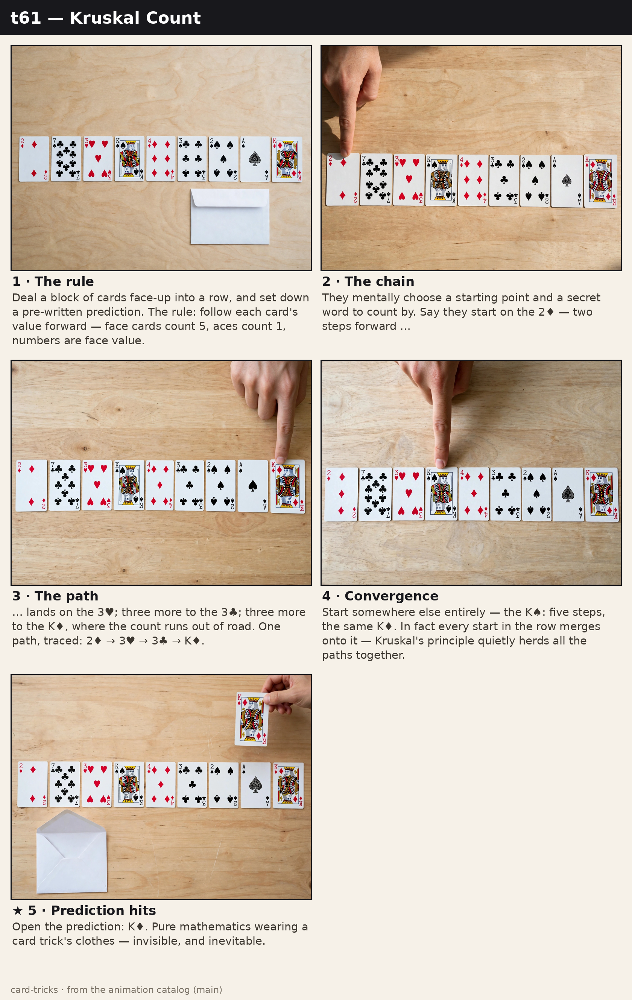
📖 The principle is named for physicist Martin D. Kruskal — a genuine piece of mathematics wearing a card trick's clothes.
📝 Practice Notes & ObservationsSaved
Setup methods
1. Kruskal pointer. A chain of jumps through the deck (by card values) lands on a predicted card with high probability.
2. Presentation. Frame as fate or synchronicity rather than a puzzle.
Tip. Works best with a full deck and an honest-looking start card. Don't over-explain the rule.
62
♣
8-Card Brainwave
Med
Eight cards in your pocket. They think of a number and name a suit — and their card is the only one facing the other way.
Start with a pocket packet of 8 specially oriented cards.
Ask the spectator to choose a number between 1 and 8 and to name a suit.
Count down to their chosen number using a specialized counting sequence (the Gilbreath principle keeps the orientation honest).
Spread the packet to reveal that their named card is facing the opposite direction of every other card.
Keep your patter focused entirely on their freedom of choice — the psychological impact of self-working math is the trick.
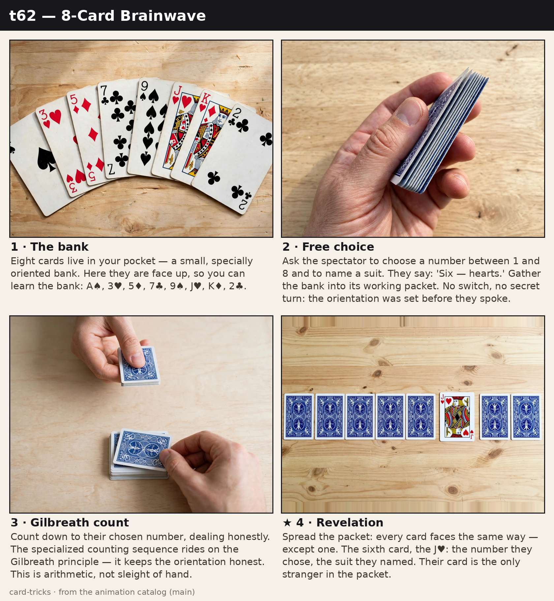
📖 The "Posterior Total" presentation rides on the Gilbreath principle, named for mathematician Norman Gilbreath — self-working magic's favorite theorem.
📝 Practice Notes & ObservationsSaved
Setup methods
1. Eight-card bank. A small packet with a hidden stranger or reversed card matching their thought.
2. Restriction. Choice is free among the eight; method knows which one they named.
Tip. The naming must feel unrestricted within the packet. Procedure kills the miracle.
FlourishesDisplays of pure handling. No trick — just beauty and control.
34
♥
Thumb Fan
Med
The classic display — a perfect semicircle of cards from one sweep of the thumb.
Hold the deck face-down in one hand, beveled slightly to the side.
Press the thumb of your other hand onto the top edge and sweep it in a smooth, steady arc.
The cards spread into a semicircle, pivoting around the middle finger of the holding hand — the anchor.
Even pressure is the whole skill: too hard and cards clump, too light and the fan collapses. A new deck fans dramatically easier than a worn one.
Learn it with fresh cards, then learn to close the fan one-handed — that's the flourish's natural finish.
Bend the deck, let go — a stream of cards flying hand to hand.
Grip the deck with the thumb along one long edge and the fingers along the other, then bend the packet into a slight arch. The cards sit under tension.
Aim at your waiting other hand and let the thumb release the cards gradually — they shoot off in a tight, arcing stream.
Start with your hands close together. Distance comes only after the release feels smooth and even.
Control beats force: a relaxed, steady thumb release throws a longer, cleaner spring than muscling it.
The spring and the dribble are the same skill in two directions. Learn the dribble first.
Packets dancing between your fingers — and the deck never actually mixes.
Split the deck into four or five packets.
Pick the packets up, display them, twirl them, and set them down in a flowing choreographed sequence — it looks like the most thorough mixing imaginable.
The sequence is constructed so every packet lands back exactly where it started. It's a false cut: pure choreography, and the deck order never changes.
Created by Chris Kenner, published in Totally Out of Control (1992) — the move that helped launch cardistry.
Learn it slowly, packet by packet, with the tutorial below. Speed is the last thing you add — the sequence has to live in your hands first.
📖 Sybil cut tutorial (Card Tricks Revealed) — taught step by step as the "Dynamo Shuffle".
📝 Practice Notes & ObservationsSaved
49
♦
Ribbon Spread
Easy
A long even ribbon of cards, then the whole ribbon turns over in one stroke.
Bevel the deck so the cards step toward your spreading hand. Index finger rides the near end; the other fingers ride the long edge.
Set the deck on a cloth surface — a close-up pad or carpet, not bare glass — and sweep in a straight line with even pressure. Uneven pressure makes a clump at the far end.
To turn it over, pinch the near end, lay a finger on top, and ride the length of the ribbon. Friction flips every card as you go.
You can split the ribbon in the middle and turn both halves, or sweep it back the other way. That's the whole flourish.
This fools no one and frames everything else. A clean ribbon before a selection makes the deck look ordinary, which is the point.
📖 The spread is in every handling book from Erdnase on. Learn it on cloth first — a bare table teaches you the wrong failure.
📝 Practice Notes & ObservationsSaved
53
♦
Pressure Fan
Easy
A wider fan than the thumb can make. The cards bend into a circle because both hands are pushing.
Bevel the deck slightly toward the right. Left hand takes it with the fingers on the face, thumb at the inner end — the same grip as a thumb fan, then you don't use it that way.
Right hand meets the deck and presses back, so the cards bow instead of sliding. Thumb of the left hand starts the spread.
As the left thumb clears, the right hand keeps pushing through the arc. The fan opens wider than a thumb fan, and the indices stay readable.
Close it by reversing the pressure. Same path, slower. A fan you can't close cleanly isn't finished.
Learn the thumb fan first. The pressure fan is that fan with a second hand helping. It also works on a tired deck, which the thumb fan will not.
📖 52Kards with Xavior Spade, "Pressure Fan." Make the small fan ugly-and-even before you chase the big one.
📝 Practice Notes & ObservationsSaved
63
♥
The Cascade Shuffle
Medium
Two halves of the deck weave themselves together and rain down in a waterfall — the riffle shuffle's showpiece finish.
Square the deck into two equal halves and angle the inner corners of the packets together.
Lift the inner corners slightly with your thumbs while pushing the packets into one another — the cards spring and weave, alternating corners automatically.
Drop the top thumbs and let the interlaced bottom corners cascade into each other by releasing downward pressure.
Square the interwoven block by pushing the sides together, or bridge it flat.
Keep your touch light — forcing the cards together too aggressively bends corners and ruins the smooth waterfall effect.
📖 The cascade is the classic riffle bridge — the waterfall finish from every casino table. Learn it after the dribble (No. 35) has taught your thumbs their pressure.
📝 Practice Notes & ObservationsSaved
64
♦
One-Handed Fan
Hard
The whole deck blooms into a fan in a single hand — no second hand to sweep it, just traction and nerve.
Hold the deck from above with the thumb at the inner edge and your fingers resting across the top face.
Plant the thumb firmly near the bottom-left corner — it is the pivot everything turns on.
Pivot the top cards outward in a sweeping circular motion, using the index and middle fingers as guides.
Distribute pressure evenly across the outer edge until a full 180-degree fan locks into place.
This flourish relies entirely on thumb traction and finger flexibility — practice with a broken-in, clean deck rather than a brand-new, slippery pack.
📖 The one-handed answer to No. 34, the Thumb Fan — a cardistry-era descendant of the classic fans, and all the harder for having no second hand to help.
📝 Practice Notes & ObservationsSaved
GlossaryFifteen words that do a lot of heavy lifting above.
Break
A small gap held in the deck — usually with a fingertip — marking a position you need to find later.
Control
Keeping a chosen card exactly where you want it while shuffles and cuts look honest.
Cut
Dividing the deck and restacking the halves in reverse order. Half of magic is cuts that aren't.
Fan
Spreading the deck into a semicircle for display, pivoting the cards around one anchored finger.
Flourish
A display of card handling with no trick inside it. Style as substance.
Force
Steering a spectator to a predetermined card while the choice feels completely free.
Injog
A card or packet left protruding slightly toward you — a hidden bookmark in the deck.
Key card
A card whose identity you know, used to locate the card sitting next to it.
Misdirection
Managing what the audience pays attention to, and when. It's directing, not distracting.
Packet
A small portion of the deck handled as a single unit.
Palm
Holding a card secretly in the hand while the hand looks empty and natural.
Patter
The talking that accompanies a trick — the story wrapped around the secret.
Sleight
A secret move of the hands. The plural does most of the work on this page.
Spread
Laying the cards in an overlapping row — usually face-up — for display or selection.
Stack
A deck, or part of one, arranged in a secret predetermined order.
Sleight School — Cheat Sheet
Seventy-four tricks, one line each. scomofo.github.io/card-tricks
1. Key Card Principle — The most useful secret in card magic: knowing a card nobody told you.
2. Overhand Shuffle Control — Keep a card exactly where you want it while the shuffle looks honest.
3. Hindu Shuffle & Force — A shuffle that looks like chaos and a force hiding inside it.
4. Double Lift — Two cards handled as one. This is the engine inside half of card magic.
5. False Cut — Look scrupulously fair while changing nothing at all.
14. Classic Force — The boldest force in the book. No shuffle, no setup — just timing and nerve.
15. The Palm — The first real vanish. A card leaves the deck, and your hand is empty — except it isn't.
20. The Peek — Learn a card without anyone knowing you looked. The quietest skill in magic.
21. Charlier Cut — Cut the deck with one hand. Pure flourish — no secret, all style.
6. The Glide — Steal the bottom card while everyone is looking right at the bottom of the deck.
7. Riffle Force — Force a card with psychology — and one small secret slip.
8. Elmsley Count — Count four cards fairly while one of them never shows its face.
9. Snap Change — One card visibly becomes another, in a snap.
16. Top Change — One card becomes another in the half-second between your hands. The cleanest switch in magic.
22. The Pass — The invisible cut. Two halves transpose inside your hands and nobody sees a thing.
32. Cross Cut Force — They cut wherever they want. They still end up with the card you picked.
33. Slip Force — Deal a pile, let them stop you anywhere — the stopped-at card is always the one you planted.
10. 21-Card Trick — No sleight of hand at all. The math does the trick, and it still floors people.
11. Two-Card Monte — Two cards, one impossible game. Fits in a pocket, plays huge.
12. Ambitious Card — Their signed card keeps rising to the top no matter what you do to it. The classic.
13. Triumph — The deck gets shuffled face-up into face-down, an unsalvageable mess — and then it isn't. Except for their card.
17. Oil and Water — Reds and blacks, mixed together — then they separate themselves. Your Elmsley count's favorite routine.
18. Twisting the Aces — Four aces, face down. Each twist of the packet turns one face-up. Vernon's masterpiece in miniature.
19. Chicago Opener — Their card changes the color of its back — then becomes someone else's card entirely. The classic opener.
23. Biddle Trick — Their card vanishes from among five cards and turns up somewhere impossible. Elmer Biddle's classic.
24. Do As I Do — You both do exactly the same thing with your own halves — and find the same card. A duet.
25. Card to Pocket — Their signed card leaves the deck and lands in your pocket. The palm's graduation ceremony.
41. Gemini Twins — Two predictions set aside in advance — each one matches the card they freely stopped at.
42. Impromptu Invisible Deck — They name any card, genuinely free — and it's the only face-up card in the deck.
43. Three-Card Monte — They follow the money card by its bent corner — you moved the bend to a loser.
44. Card to Ceiling — Throw their signed card at the ceiling. It sticks.
45. McDonald's Aces — Four aces vanish from under cover cards one by one — and gather in the spectator's hands.
26. Si Stebbins Stack — A secret number system hiding in plain sight — cut all you want, the order never breaks.
27. Out of This World — They sort the reds from the blacks without looking — and you're not allowed to touch the deck.
28. Fitch Cheney's Five-Card Trick — Your partner leaves the room. Five random cards later, they name the hidden one.
29. Ten-Card Poker Deal — They deal. They turn over four kings. You still win.
30. The Clock Trick — Name any hour. The clock already knows.
31. Miraskill — They shuffle, they deal, you never touch the cards — and your prediction is right twice.
38. Spelling Bee — Spell each card's name, one card per letter — every card turns up on its last letter.
39. Lazy Magician — They shuffle, peek, and count — and find their own card. You never touch the deck.
40. Poker Player's Picnic — They cut four piles themselves. An ace sits on top of every one.
34. Thumb Fan — The classic display — a perfect semicircle of cards from one sweep of the thumb.
35. The Dribble — Cards cascading hand to hand in a waterfall — the foundation flourish.
36. The Spring — Bend the deck, let go — a stream of cards flying hand to hand.
37. Sybil Cut — Packets dancing between your fingers — and the deck never actually mixes.
46. Double Undercut — Two cuts, and their card is back on top. The control you reach for after the injog.
47. Mexican Turnover — Turn a tabled card over and switch it for the one in your hand.
48. Princess Card Trick — They think of a card. You take one away. Theirs is the one that's gone.
49. Ribbon Spread — A long even ribbon of cards, then the whole ribbon turns over in one stroke.
50. Erdnase Color Change — Cover the face of the deck, and the card staring at them is a different one.
51. The Tilt — Their card goes into the middle. It is second from the top.
52. Magician's Choice — Every choice is theirs. The ending was yours before they started.
53. Pressure Fan — A wider fan than the thumb can make, bent into a circle by pressure.
54. The Spread Cull — Spread the deck face-up for everyone — the card you need slides underneath it to the top.
55. The Side Steal — Their card is buried in the middle. You square the deck — and it's in your palm.
56. Cannibal Cards — Four kings, three chosen cards. The kings eat — and the missing turn up inside them.
57. The Gathering of the Clan — Four aces buried in four separate packets — then found all together in the last one.
58. Paul Harris' Reset — Four aces turn into kings one by one — then, in a blink, both packets are back where they started.
59. Further Than That — They name a number, you spell a name — the stack deals up the Ace of Spades, then the other aces, then a royal flush.
60. Play It Straight Triumph — Triumph with no sleights at all — the honest procedure rights the deck into one suit, Ace to King, minus their card.
61. Kruskal Count — They hop through the cards by the numbers, free as they like — every path lands on the card you predicted.
62. 8-Card Brainwave — They think of a number and name a suit — in an eight-card packet, their card is the only one facing the wrong way.
63. The Cascade Shuffle — Weave two halves corner to corner and let go — the cards rain down in a waterfall.
64. One-Handed Fan — The whole deck blooms into a fan in one hand — nothing but thumb traction holding it there.
Expanded LibraryAdditional moves, routines, and self-workers beyond the original core set.
82
♠
Breather Crimp
Beginner
A subtle permanent bend that lets you cut to a card by feel — a lifelong locator.
Work. Soft lengthwise (or widthwise) bend under casual handling.
Durability. Survives shuffles; invisible at a glance.
Use. Riffle or cut — the deck breaks at the crimp.
Control. Instant access without a visible break.
Tip. Less bend is more. If you can see it, they can see it.
Setup methods
1. Lengthwise bend. Hold the card face-down and apply a soft lengthwise bow (ends down, middle up — or the reverse). Less is more; if you can see it, so can they.
2. Widthwise bend. Same idea across the short axis. Some prefer this for riffle breaks.
Use. Riffle or cut; the deck wants to break at the crimp. Mark a force card, a stack boundary, or an out-jog locator. Survives shuffles if the bend is permanent and soft.
83
♠
Injog Shuffle Control
Beginner
Overhand shuffle that bookmarks a card with a protruding injog for later cuts.
Start. Selection (or target stock) on top.
Shuffle. Overhand; when the key packet should be marked, let it land injogged toward you.
Hold. The step is your bookmark.
Cut. Cut to the injog or undercut it to complete the control.
Tip. Keep the rest of the shuffle square. Only one packet should step out.
Setup methods
1. Top stock control. Selection on top. Overhand shuffle; when the key packet should be marked, let it land injogged (protruding toward you).
2. Under the injog. Later undercut or cut to the injog so the selection returns to top or goes to bottom as needed.
Tip. Keep the rest of the shuffle square. Only one packet should step out — that single step is your bookmark.
173
♠
Matching the Cards
Beginner
Four selections are lost; each is later found paired with its true mate.
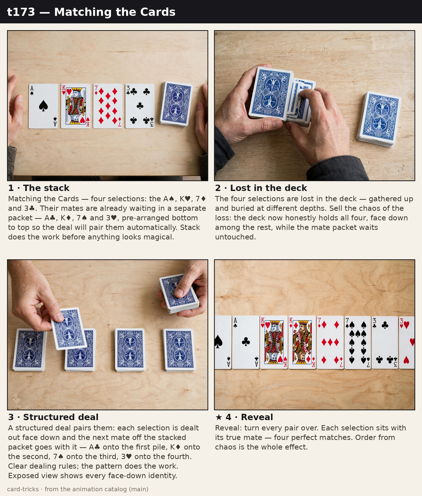
Select. Four cards chosen and lost.
Deal. A structured deal or spell pairs mates.
Reveal. Four perfect matches.
Tip. Sell the chaos of the loss. Order from chaos is the whole effect.
Setup methods
1. Stack or key. Mates pre-arranged or marked so the deal pairs them automatically.
2. Automatic procedure. Spectator can deal; the pattern does the work.
Tip. Clear dealing rules. Confusion kills the neatness of the matches.
174
♠
Card Through Table
Intermediate
A signed card on the table penetrates through to the underside.
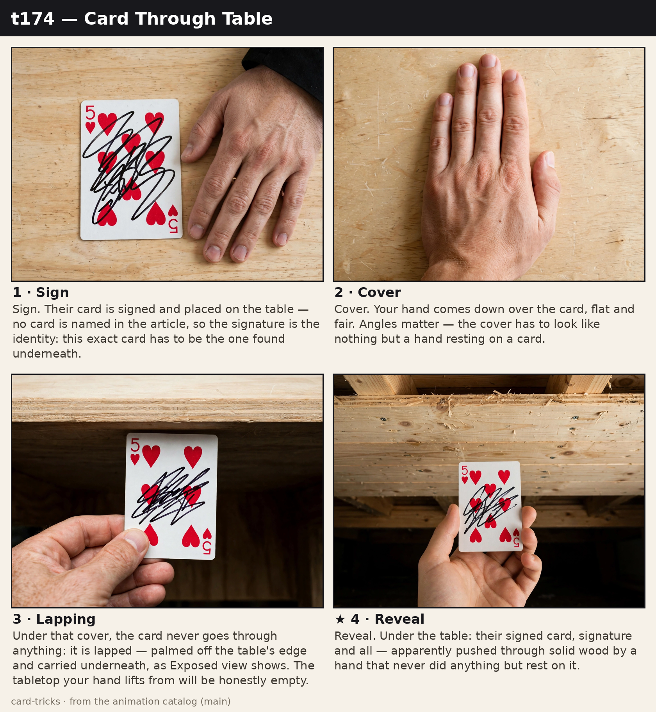
Sign. Card signed and placed on the table.
Cover. Hand covers; lapping or switch sends it under.
Reveal. Signed card under the table.
Tip. Angles matter. The hand cover must look fair.
175
♠
Ambitious Classic Phase
Intermediate
A full ambitious sequence: top, top again, pop-up, and pocket finale.
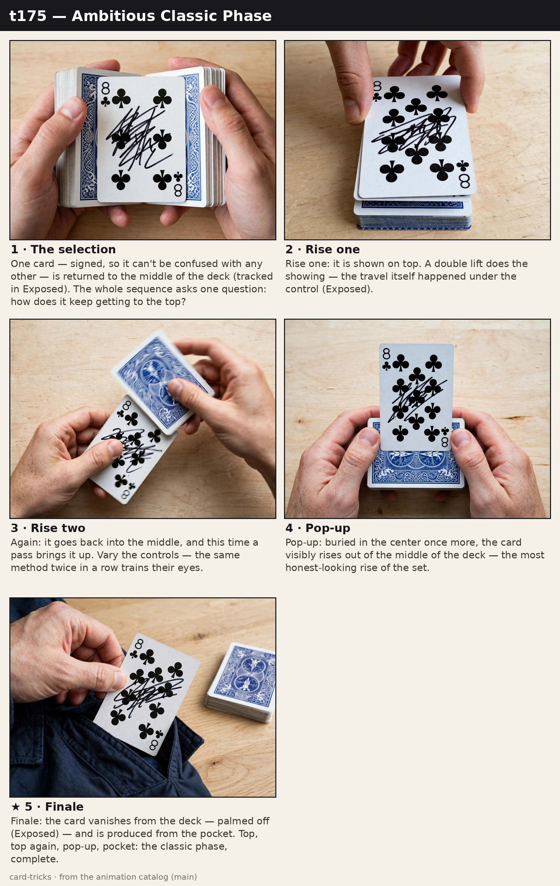
Rise. Middle to top (double lift / control).
Again. Repeat with a different control.
Pop-up. Card visibly rises from the center.
Pocket. Vanish and produce from the pocket.
Tip. Vary the controls. Same method twice in a row trains their eyes.
176
♠
Numeric Force
Beginner
A freely named number counts to a forced or predicted card.
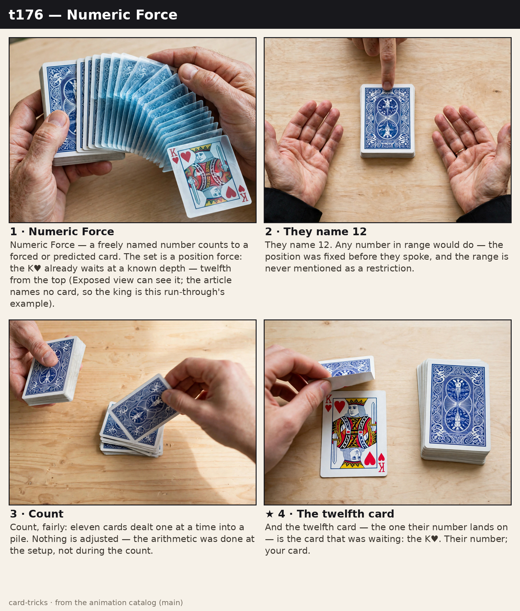
Number. Spectator names any number (within range).
Count. Deal to that number.
Reveal. Force card or prediction waits there.
Tip. Restrict the range only if the method needs it — and hide the restriction in the script.
Setup methods
1. Position force. Force card controlled to a position; number is forced or adjusted to match.
2. Adjustment mid-count. A pass, hop, or second deal aligns card and number.
Tip. The number must feel free. Procedure that smells like restriction weakens it.
177
♠
Packet Vanish
Intermediate
A small packet vanishes from the hands — one by one or all at once.
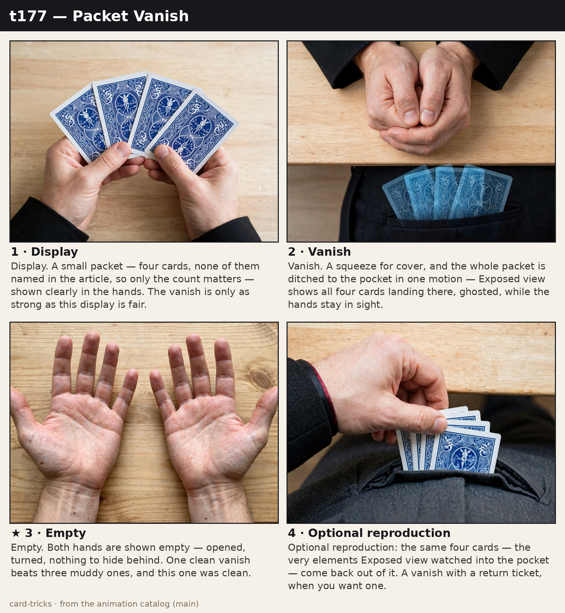
Display. Packet clearly in the hands.
Vanish. Count, squeeze, or ditch to lap/pocket.
Empty. Hands shown empty; optional reproduction.
Tip. One clean vanish beats three muddy ones.
178
♠
Spectator as Magician
Beginner
They hold the deck and find their own card through a guided hands-off procedure.
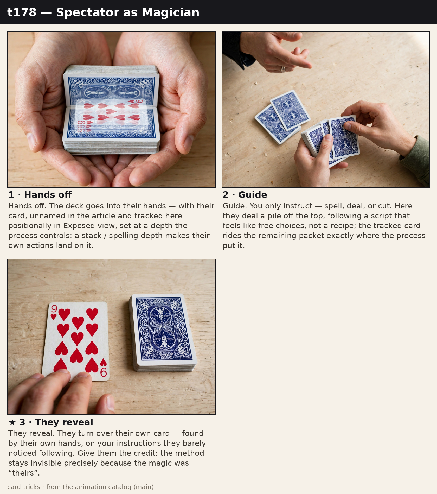
Hands off. Deck in their hands.
Guide. You only instruct — spell, deal, or cut.
They reveal. They turn over their own card.
Tip. Give them the credit. Your method stays invisible when the magic is "theirs."
Setup methods
1. Automatic process. Key card, stack, or spelling depth makes their actions land on the selection.
2. Script. Instructions must feel like free choices, not a recipe.
Tip. The less you touch the deck, the more it feels like their magic.
179
♠
Acrobatic Card
Intermediate
A card jumps, flips, or pops out of the deck under its own power.
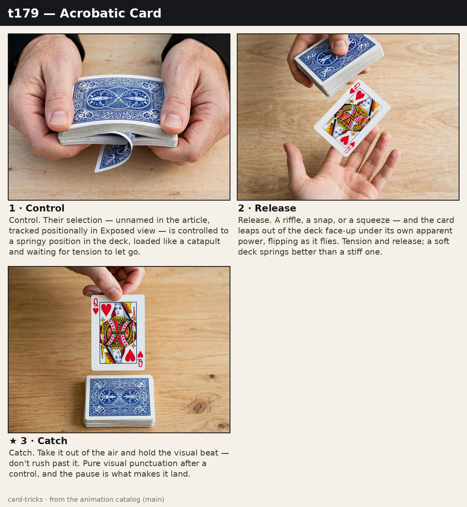
Control. Selection to a springy position.
Release. Riffle, snap, or squeeze sends it flying face-up.
Catch. Hold the visual beat.
Tip. Tension and release. A soft deck springs better than a stiff one.
180
♠
Card Under Box
Intermediate
Their card vanishes and is found under the card case that stayed in view.
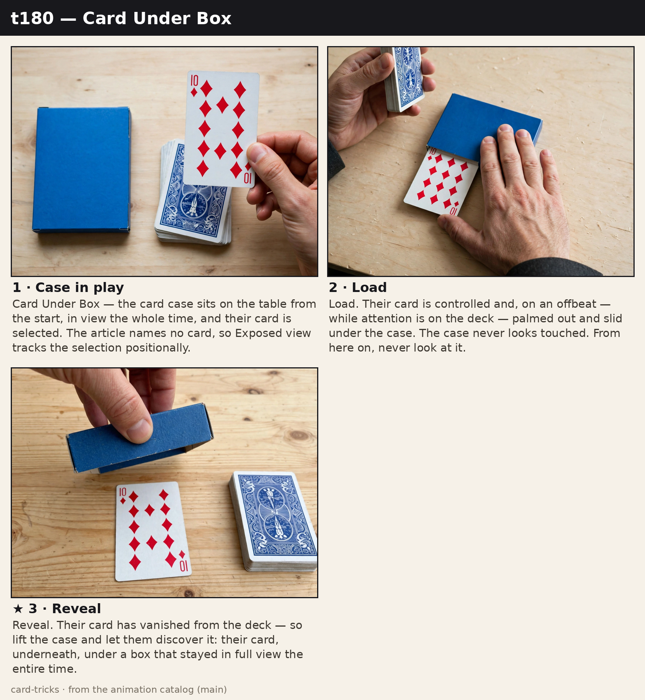
Case in play. On the table from the start.
Load. Under the case on an offbeat.
Reveal. Lift the case — card underneath.
Tip. Never look at the case after the load. Let them discover it.
181
♠
Four Ace Production
Intermediate
Produce the four aces from a shuffled deck in a flashy sequence.
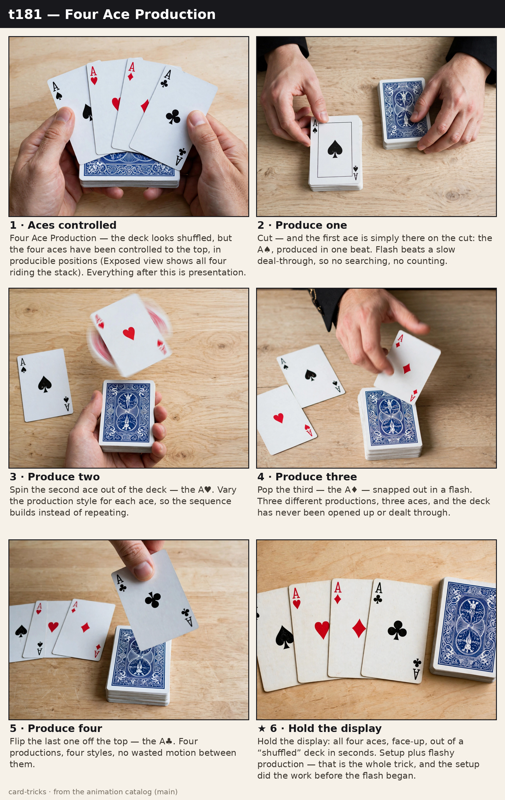
Setup. Aces controlled to producible positions.
Produce. Cut, spin, or pop — one ace at a time.
Display. All four face-up.
Tip. Flash beats a slow deal-through. Vary the production style for each ace.
182
♠
Triumphant Cut
Intermediate
A flourishy cutting sequence that rights a mixed deck — selection reversed.
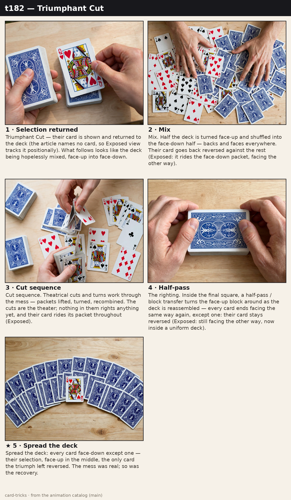
Mix. Face-up into face-down (apparent).
Cut sequence. Theatrical cuts and turns.
Spread. All face-down except their card face-up.
Tip. The cuts are the theater. The righting method can be a simple half-pass or block transfer.
183
♠
Prediction Card
Beginner
A card set aside before anything begins matches their free selection.
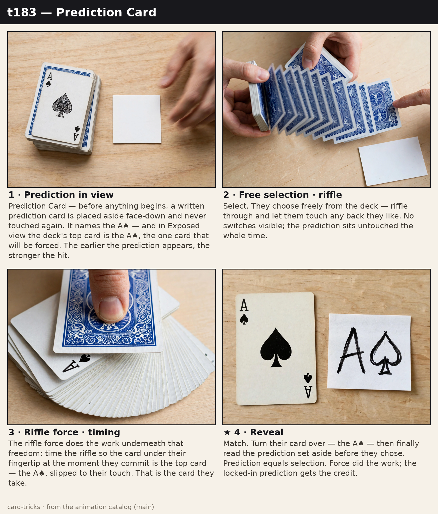
Predict. Card placed aside face-down.
Select. Free choice from the deck.
Match. Prediction equals selection.
Tip. Force or stack. The prediction must feel locked in before they choose.
Setup methods
1. Force. Classic force or riffle force so selection matches the prediction.
2. Switch. A differently staged variant — not another route to the opening above. Nothing is set aside in view: the selection is made first, and only then is a prediction produced and secretly switched in. Because the card on the table was a stand-in, it can't carry this trick's promise — set aside before anything begins, locked in before they choose. For the trick as written, use the force.
Tip. The earlier the prediction appears, the stronger the hit.
184
♠
Back-to-Back
Intermediate
Two cards held back to back both change into different cards.
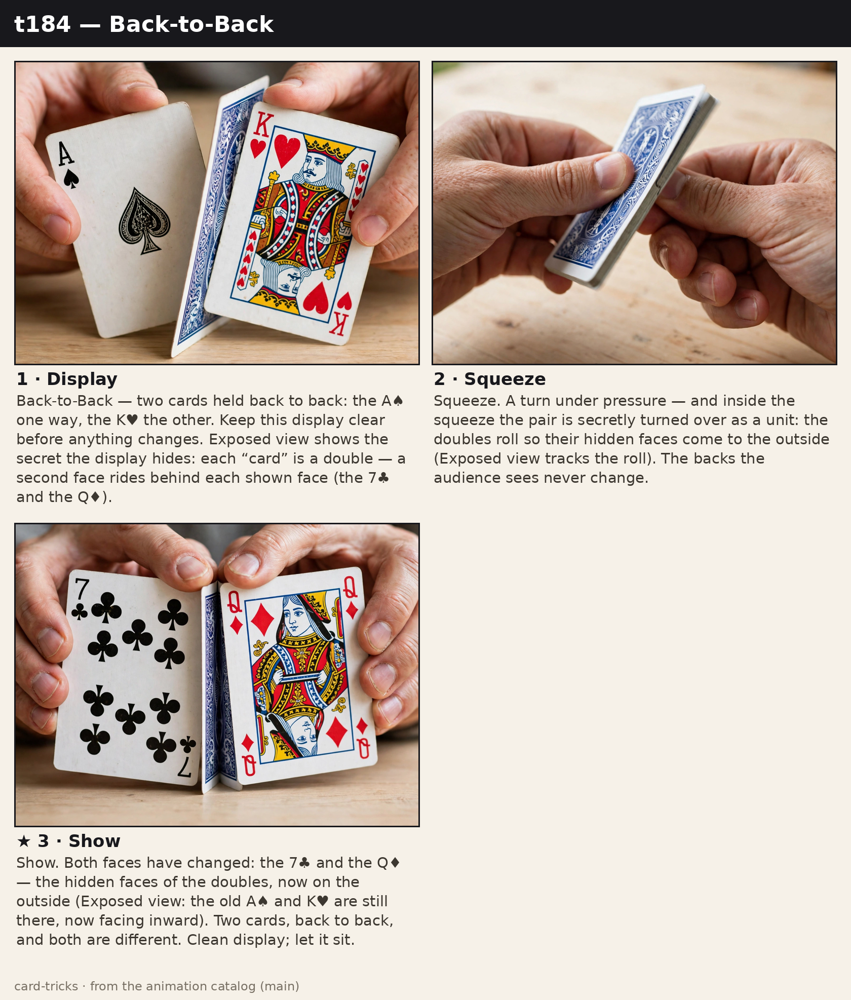
Display. Two faces shown back to back.
Squeeze. A turn or pressure changes both.
Show. Two new faces.
Tip. Doubles and a secret turnover. Keep the back-to-back display clear before the change.
185
♠
Stop Trick
Beginner
They say stop as you deal; the stopped-at card is their selection.
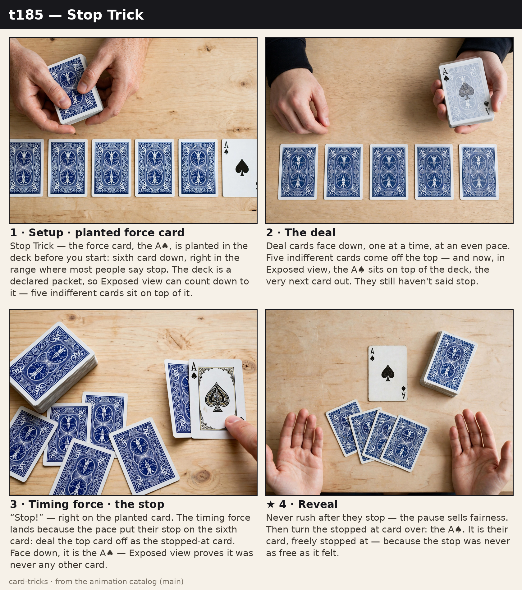
Deal. Cards dealt face-down one at a time.
Stop. Whenever they say.
Reveal. That card is theirs.
Tip. Psychological stop, second deal, or timing force. Sell the freedom of the stop.
Setup methods
1. Timing force. Pace the deal so stop lands near the force card; adjust with a second if needed.
2. Psychological. Most people stop in a predictable range — place the card there.
Tip. Never rush after they stop. The pause sells fairness.
186
♠
Color-Changing Aces
Intermediate
Four aces change back color one at a time.
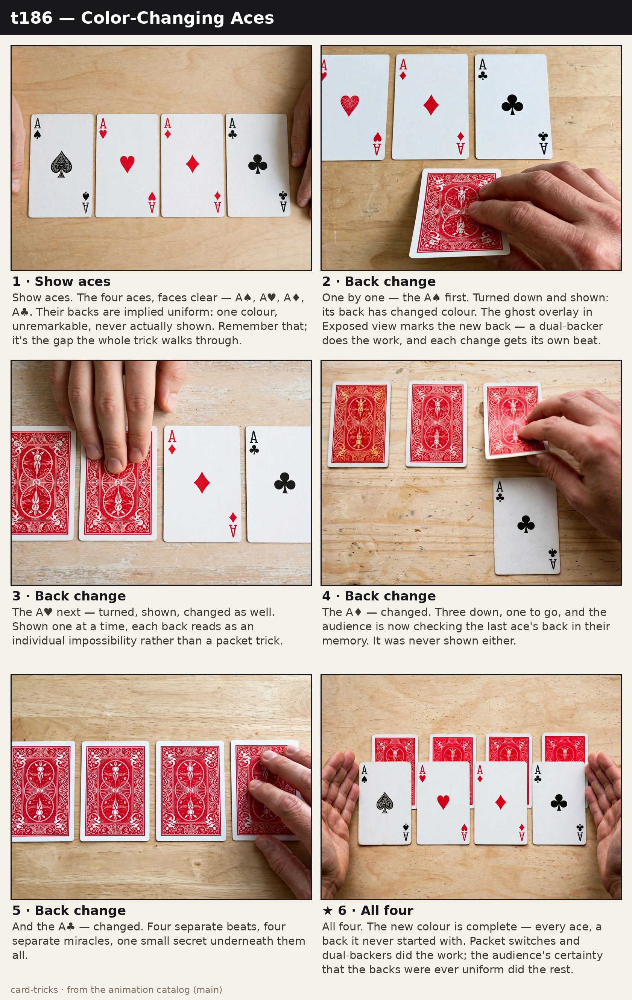
Show aces. Faces clear; backs implied uniform.
One by one. Each back is shown changed.
All four. New color complete.
Tip. Packet switches and dual-backers. Show each back change as its own beat.
187
♠
Card Under Box
Intermediate
Their card vanishes and is found under the card case that stayed in full view.
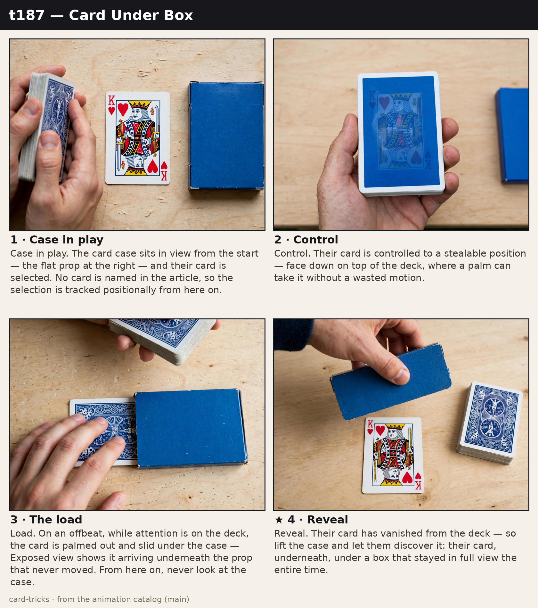
Case in play. In view from the start.
Control. Selection to a stealable position.
Load. Under the case on an offbeat.
Reveal. Lift the case — card underneath.
Tip. Never look at the case after the load. Let them discover it.
188
♠
Ace Assembly
Intermediate
Four aces vanish from three packets and gather under the fourth — the classic assembly.
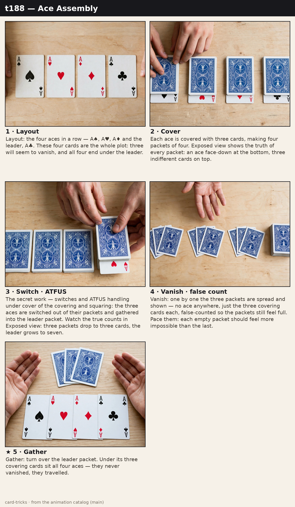
Layout. Four aces in a row; each covered with three cards.
Vanish. Three packets shown empty of aces.
Gather. Leader packet holds all four.
Method. Switches, ATFUS, and false counts.
Tip. Pace the vanishes. Each empty packet should feel more impossible than the last.
189
♠
Invisible Deck (Impromptu)
Intermediate
They name any card; it is the only reversed card in the deck — no gimmicked deck required.
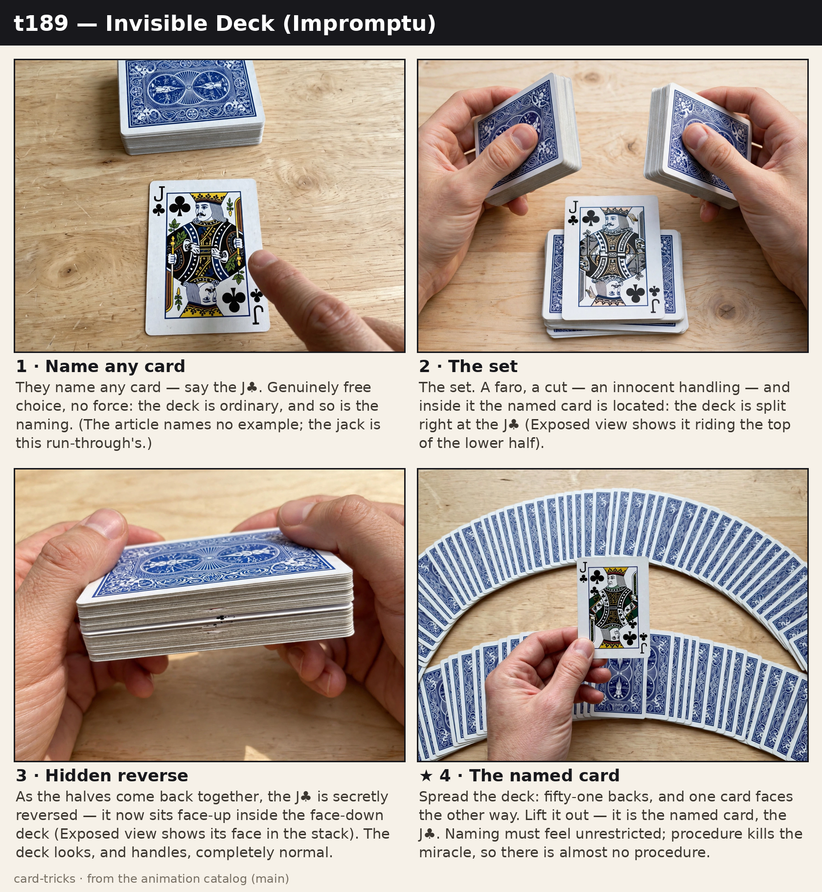
Name. Any card — free choice.
Set. Faro, cut, or hidden reverse positions the stranger.
Spread. One card faces the other way.
Reveal. It is the named card.
Tip. Naming must feel unrestricted. Procedure kills the miracle.
190
♠
Ambitious Pop-Up
Intermediate
The selection visibly rises from the center of the deck on its own.
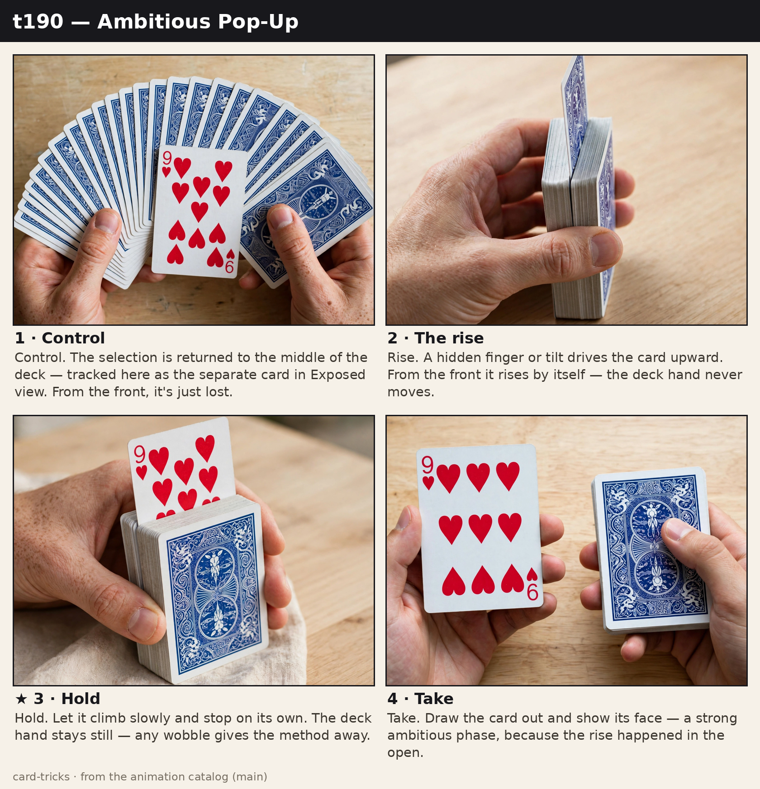
Control. Selection to a rising position.
Rise. Hidden finger or tilt drives it upward.
Hold. Let it climb slowly.
Take. Draw out and show the face.
Tip. The deck hand stays still. Any wobble gives the method away.
191
♠
False Overhand Shuffle
Intermediate
Overhand shuffle that preserves full order or a large stock.
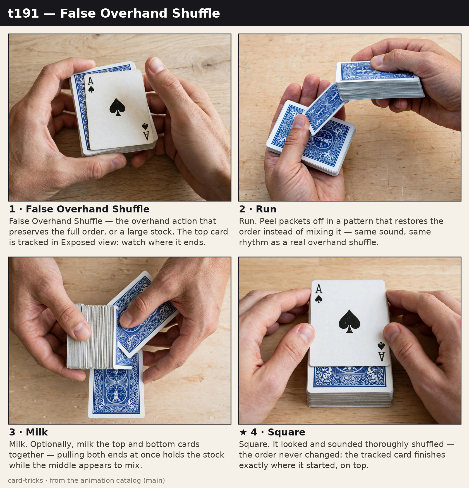
Run. Peel packets in a pattern that restores order.
Milk. Optional milk of top and bottom to hold stock.
Square. Looks mixed; order intact.
Tip. Match the sound and body language of a real overhand shuffle.
192
♠
Card to Envelope
Intermediate
Signed card vanishes and appears in a sealed envelope that was in view.
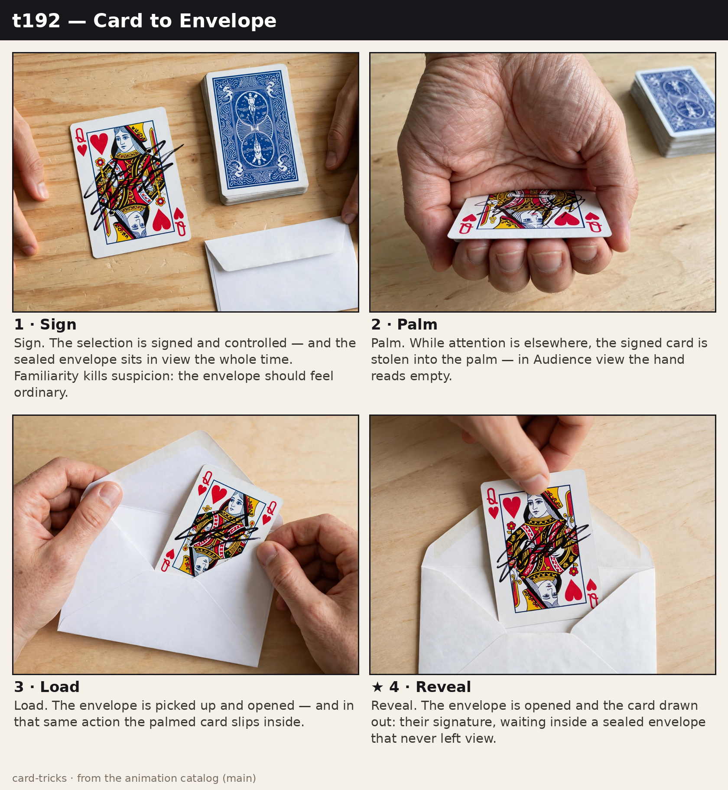
Sign. Selection signed and controlled.
Palm. Steal while attention is elsewhere.
Load. Into the envelope as you open it.
Reveal. Signature waits inside.
Tip. The envelope should feel ordinary. Familiarity kills suspicion.
193
♠
Multiple Selection Routine
Intermediate
Three or more selections lost and found in escalating ways.
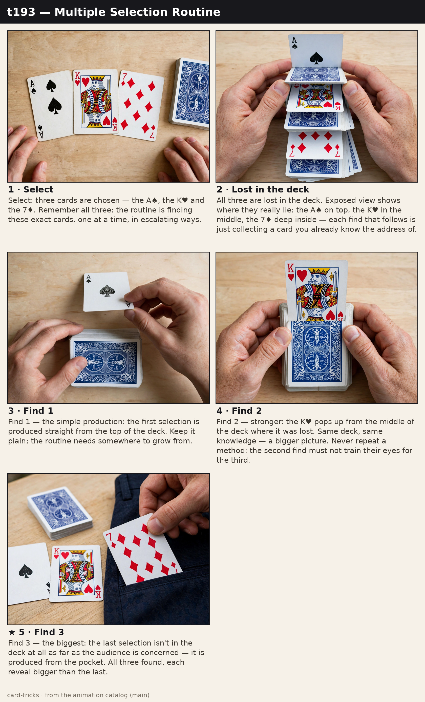
Select. Three cards chosen and lost.
Find 1. Simple production (top or spell).
Find 2. Stronger — pop-up or sandwich.
Find 3. Pocket, glass, or ceiling.
Tip. Build each reveal bigger. Same method twice trains their eyes.
194
♠
Prediction Sandwich
Beginner
A card appears trapped between two face-up mates or jokers.
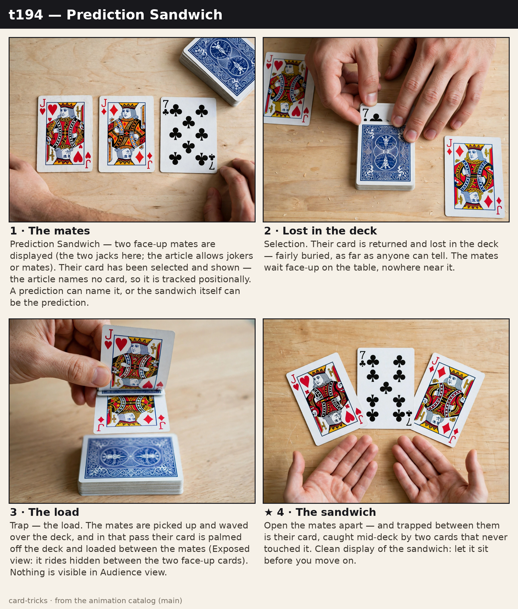
Jokers. Two face-up cards displayed.
Selection. Lost in the deck.
Trap. Selection appears between the jokers.
Optional. Prediction names the sandwiched card.
Tip. Clean display of the sandwich. Let it sit before you move on.
65
♠
The Pinky Break
Beginner
The secret separation that makes double lifts, controls, and passes possible. Soft flesh, invisible from the front.
Grip. Deck in left-hand dealing position.
Catch. As a card is returned or a packet lands, the pinky pad catches a thin edge at the rear.
Softness. Keep the finger relaxed — tension opens a visible side gap.
Use. Your bookmark for doubles, undercuts, passes, and forces.
Tip. Practice squaring from the front while holding the break. If you can see daylight at the side, the audience can too.
Setup methods
1. Pinky pull-down. Left pinky at the rear edge pulls down one or more cards until a flesh break forms above them.
2. From a peek or count. After a pinky count or a glimpse, hold the break so a later cut, force, or pass starts from a known depth.
Tip. The front edge of the deck must stay square. If the break shows from the front, lighten the pull or angle the deck slightly down.
66
♠
Swing Cut
Beginner
The everyday cut that also powers many false cuts. Clean, natural, and worth drilling until it is automatic.
Start. Deck in right hand, from above.
Swing. Left hand takes roughly half the cards in a small arc.
Complete. Right-hand packet goes on top — or stays separated for a false sequence.
Rhythm. Same motion whether the cut is genuine or not.
Tip. A swing cut into an out-jog, followed by a square-up that leaves the original top stock in place, is a workhorse false cut.
Setup methods
1. True swing cut. Right hand holds the deck; left hand takes the top half in a swinging action; complete the cut. Casual and fair.
2. False swing cut. Same body language, but a strip or hop restores the original top stock (see False Swing Cut).
Tip. Match the tempo of your real swing cut when you later use the false version — identical rhythm is the cover.
89
♠
One-Hand Top Palm
Advanced
Steal the top card into the right palm with one hand while the left stays free.
Grip. Deck in right hand; top card targeted.
Lever. Fingers and heel lever the top card into the palm during a square or gesture.
Free left. Left hand can take or hand off the deck.
Produce. On your own schedule from the right palm.
Tip. Practice until the palm looks like a casual square. The empty left hand is what sells it.
90
♠
Mercury Card Fold
Intermediate
Fold a card into quarters in the palm — invisible bulk for wallet, pocket, or envelope loads.
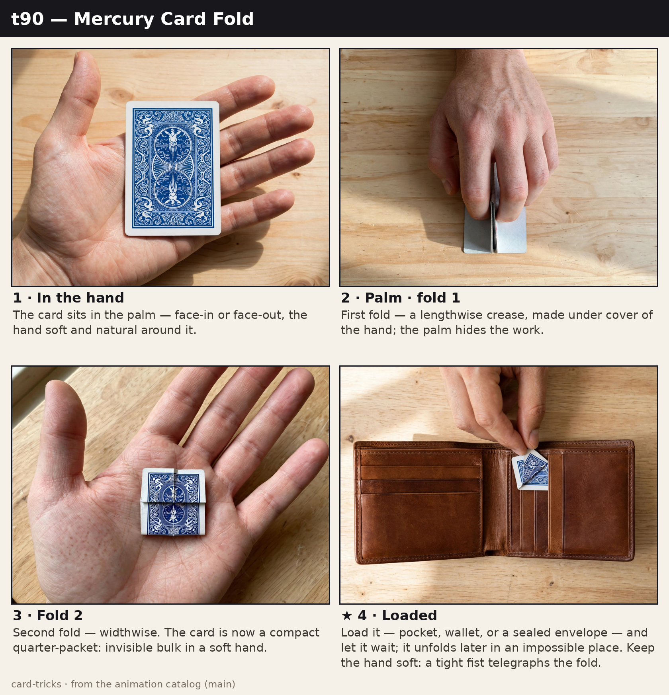
Palm. Card face-in or face-out in the hand.
Fold 1. Lengthwise crease under cover.
Fold 2. Widthwise — card is a compact packet.
Load. Pocket, wallet, or sealed envelope for later reveal.
Tip. Keep the hand soft. A tight fist telegraphs the fold.
91
♠
False Riffle Shuffle
Advanced
A riffle that looks thorough but preserves full order or a large stock.
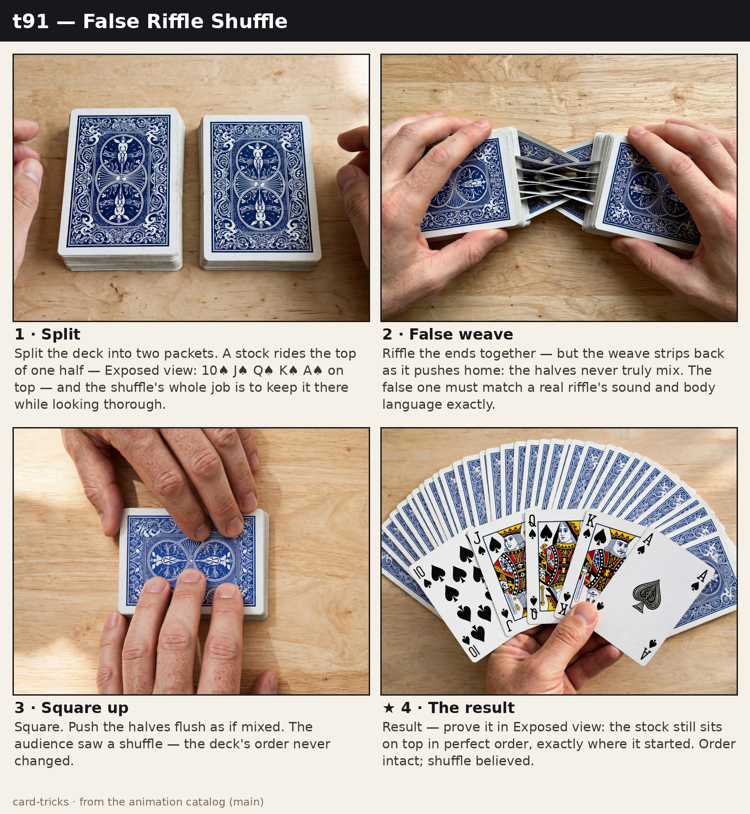
Split. Deck into two packets.
Riffle. Weave so one half strips back or a Zarrow-style undercut preserves order.
Square. Push together as if mixed.
Result. Order intact; shuffle believed.
Tip. Study a real riffle first. The false version must match the sound and body language exactly.
97
♠
Center Deal
Advanced
Deal a card from the middle of the deck while appearing to deal from the top.
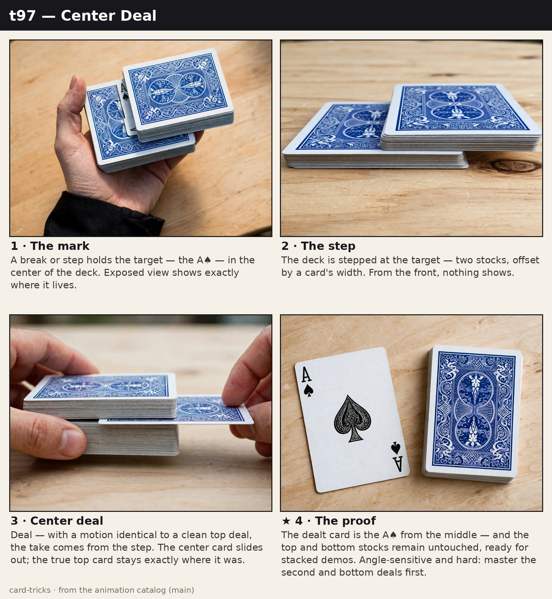
Mark. Break or step holds the target in the center.
Deal. Take from the step; top card stays.
Cover. Identical motion to a clean top deal.
Result. Top and bottom stocks untouched.
Tip. Angle-sensitive and difficult. Master second and bottom deals first.
98
♠
Greek Deal
Advanced
Deal the second card from the bottom while appearing to deal the top.
Target. Second-from-bottom card.
Take. Bottom stays; the one above it leaves.
Cover. Same as a normal deal from the front.
Use. Rare, powerful, extremely angle-sensitive.
Tip. Practice in a mirror at half speed. If you can see the bottom edge, so can they.
99
♠
Overhand Stack
Intermediate
Build pairs, trips, or a full house during an overhand shuffle.
Plan. Know the deal order you need.
Run. Peel cards singly or in groups, counting silently.
Land. Target cards fall at the correct deal positions.
Deal. Fair-looking shuffle produces the stacked hand.
Tip. Start with a simple pair. Add complexity only after the run-up is invisible.
100
♠
The Hop
Advanced
Tabled false cut that restores the top stock after the spectator cuts.
Cut. Spectator cuts the deck on the table.
Hop. As you complete the cut, the original top half is hopped back on top.
Square. Looks cut and fair.
Result. Top stock restored for the deal.
Tip. The hop is a sound and a blur. Practice until the square-up sells the honesty.
101
♠
The Cooler
Advanced
Switch the entire deck for a stacked (cold) deck under cover.
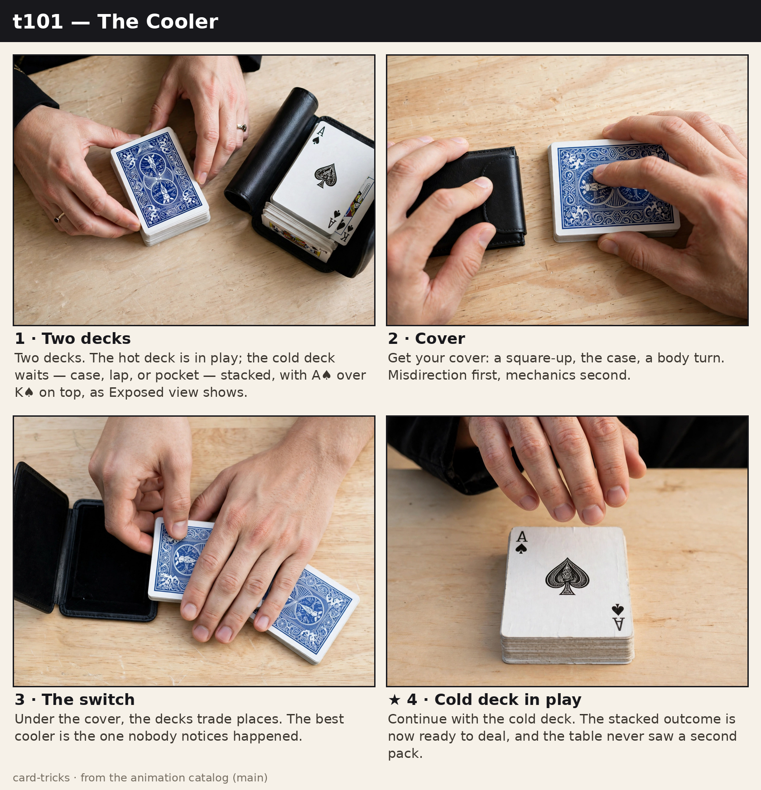
Two decks. Hot in play; cold ready (case, lap, or pocket).
Cover. Square-up, case, or body turn.
Switch. Decks trade places.
Continue. Cold deck deals the stacked outcome.
Tip. Misdirection first, mechanics second. The best cooler is the one nobody notices happened.
107
♠
Herrmann Pass
Advanced
A quiet, coverable pass — right hand screens while the halves transpose.
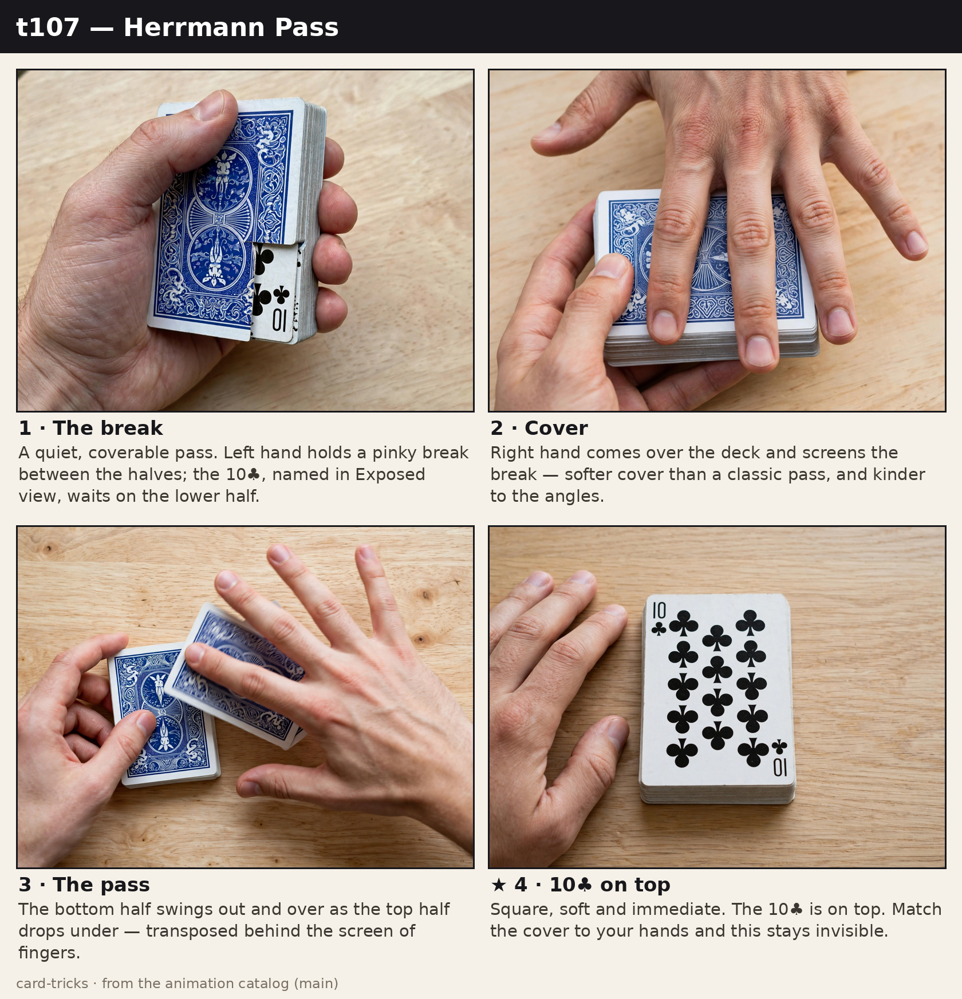
Break. Pinky break between the halves.
Cover. Right hand over the deck.
Transpose. Bottom half swings over; top drops under — screened.
Square. Soft and immediate.
Tip. Softer and often more angle-friendly than a classic pass. Match the cover to your hands.
108
♠
Half Pass
Advanced
Secretly reverse the bottom half (or a packet) under cover of the top stock.
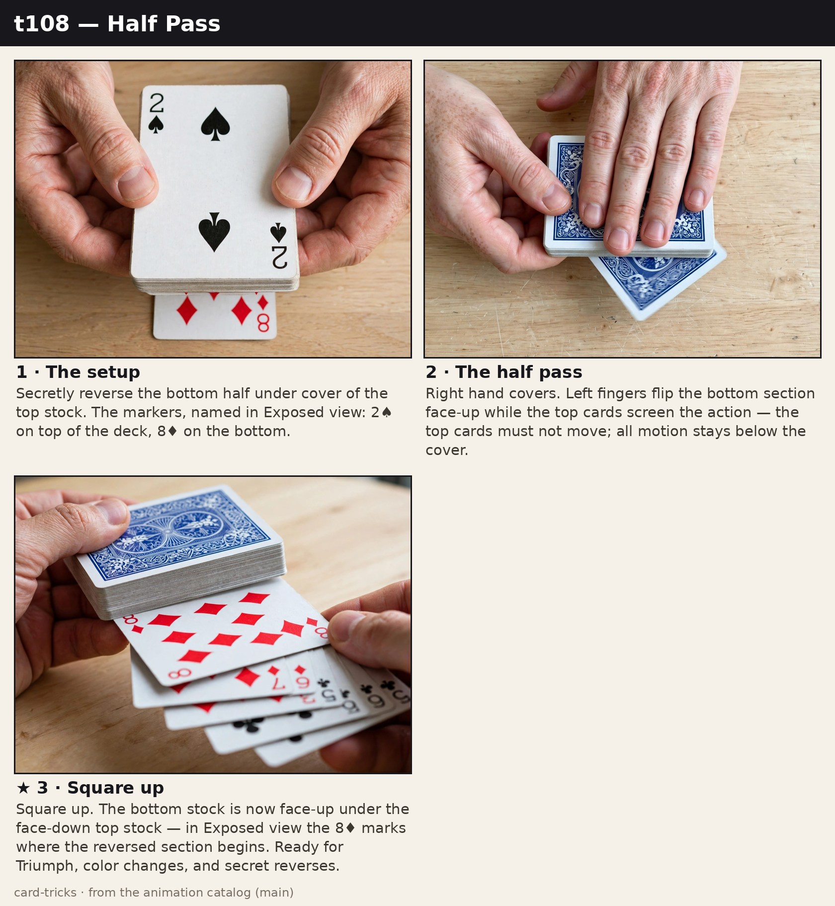
Cover. Right hand screens the deck.
Flip. Left fingers reverse the bottom section.
Square. Bottom stock face-up under face-down cover.
Use. Triumph, color changes, secret reverses.
Tip. The top cards must not move. All motion stays below the cover.
109
♠
Braue Reversal
Intermediate
Reverse a card while cutting the deck — natural cover, no visible reverse action.
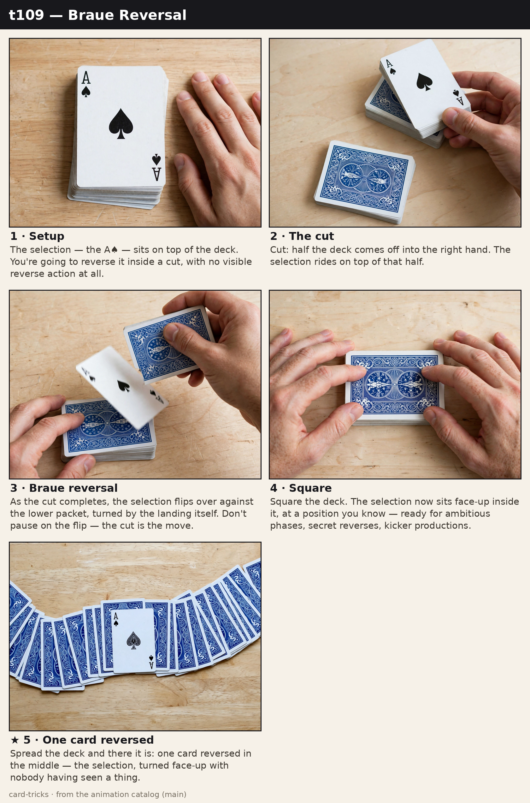
Cut. Half the deck into the right hand.
Flip. Selection turns against the left-hand packet as the cut completes.
False use. Snap is part of the cover for second or bottom.
Tip. Consistent snap volume whether the deal is fair or false — never change the sound.
136
♠
Optical False Cut
Intermediate
Cut that looks genuine because packet edges mislead the eye.
Layout. Packets placed so visible edges suggest a real cut.
Eye track. Audience follows the wrong packet.
Reassemble. Original top stock stays on top.
Result. Believed cut; order intact.
Tip. The optical sell is in the edge alignment. Study it in a mirror from the audience view.
137
♠
Riffle Pass
Advanced
Pass the halves under cover of a riffle down the edge of the deck.
Break. Held between the halves.
Riffle. Right thumb riffles the outer edge.
Pass. Halves transpose under sound and motion.
Square. Looks like a search or flourish.
Tip. The riffle must look motivated. Searching for a card is a perfect reason.
138
♠
Table Pass
Advanced
Pass while the deck is on or near the table, under cover of squaring.
Table. Deck near the edge or mat.
Square. Hands square against the table.
Pass. Halves transpose in that action.
Rest. Deck sits squared and fair.
Tip. Table edge gives natural cover. Don't pass without a reason to square.
139
♠
False Swing Cut
Intermediate
Swing-cut action that restores the original top stock.
Swing. Left hand takes the top half.
Strip/hop. Original top is restored instead of an honest complete.
Square. Looks like a casual swing cut.
Result. Order unchanged.
Tip. Match the body language of your real swing cut exactly.
140
♠
Flip-Flop Cut
Intermediate
Rapid packet flips that look chaotic but can preserve full order.
Split. Halves or thirds in the hands.
Flip-flop. Packets flip end-for-end and trade hands quickly.
Square. Either mixed or fully restored.
Sell. Chaos is the cover.
Tip. Rhythm sells the chaos. Uneven timing looks like fumbling.
141
♠
ATFUS
Advanced
Any Time Face-Up Switch — switch face-up cards while spreading or counting into the deck.
Display. Face-up cards shown (often aces).
Spread/count. Into the deck under cover.
Switch. Face-ups replaced by indifferent cards or loaded.
Result. Audience thinks the cards are still isolated; they're gone.
Tip. Core move for modern ace assemblies. Clean displays before the switch matter most.
142
♠
Block Push-Off
Intermediate
Push two or more cards as a squared block — foundation of doubles and false counts.
Prepare. Left thumb lines up a squared block.
Push. Block slides off the top as a unit.
Take. Right hand takes it as one card.
Edges. Must stay flush — any split is a tell.
Tip. Drill until a double push-off feels identical to a single. Then add triples.
143
♠
Strike Second Deal
Advanced
Take the second card with a sharp strike from a momentarily squared deck.
Square. Deck is flush — no prolonged push-off.
Strike. Right hand takes the second card in one sharp motion.
Top stays. Original top card never leaves.
Angle. Faster and more angle-sensitive than push-off seconds.
Tip. Strike seconds reward timing over prolonged setup. Mirror work is mandatory.
144
♠
Cardini Change
Intermediate
Quick economical visual change — Cardini style, understatement over flash.
Display. Face-up card (or small packet) in view.
Snap. Sharp wrist turn or finger motion exchanges the face.
Hold. New face registers; hands go still.
Style. Less is more — Cardini's lesson.
Tip. Don't decorate the change. Land it and stop.
145
♠
Shapeshifter Change
Intermediate
Flourishy spinning change — the card appears to morph mid-motion.
Spin. Card or double twirls in a continuous motion.
Exchange. Face switches mid-spin under the blur.
Stop. New face held still.
Texture. Modern, visual, effortless-looking.
Tip. The spin must look intentional and smooth. A wobbly twirl kills the morph.
146
♠
Kiss Change
Intermediate
Two face-up cards meet (kiss); one face changes as they separate.
Two cards. Face-up, held apart.
Kiss. Faces come together.
Switch. One face exchanges in the contact.
Separate. Changed face is revealed.
Tip. Intimate and strong at close range. Don't rush the separation — let the change register.
147
♠
Classic Pass
Advanced
The original invisible cut — halves transpose under full right-hand cover in a blink.
Break. Pinky break between the halves.
Cover. Right hand screens from above — audience sees only the back of the hand.
Transpose. Bottom half swings up as top drops under. Hands barely seem to move.
Square. Immediate, identical to an ordinary cut.
Tip. Graduate school of card magic. Until it is invisible, use a control that doesn't require it.
148
♠
Bluff Pass
Intermediate
The audience believes a pass happened. Nothing did. Conviction does the work.
Setup. Card already controlled where you need it.
Mime. Cover and tension of a real pass — then simply square.
Sell. Act as if the hard work is done.
Use. For spectators who know to watch for a pass.
Tip. Only works if your real pass (or the idea of one) is already in their vocabulary.
149
♠
S.W.E. Shift
Advanced
Steranko's modern flowing shift — control a card in one continuous open-looking action.
Mark. Selection outjogged or at a break.
Flow. Continuous lateral and downward action as it goes flush.
Arrive. Card to top or into palm with no pause.
Openness. The open look is the cover.
Tip. No pause between square and control. Any hitch turns flow into a move.
150
♠
Erdnase Bottom Palm
Advanced
Classic method for palming the bottom card or bottom stock from the deck.
Target. Bottom card or block.
Cover. Right hand squares or takes the deck.
Curl. Left fingers draw the bottom into the left palm.
Leave. Deck handed away or tabled; card retained.
Tip. Soft hand, natural body turn. The palm survives if nothing looks held.
151
♠
One-Handed Bottom Deal
Advanced
Deal the bottom card with only the dealing hand — the other hand is free.
Grip. Deck in a single-hand dealing grip.
Free. Fingers buckle or release the bottom card.
Pivot. Card pivots out into a deal motion.
Sell. Free hand never touches the deck.
Tip. Among the hardest false deals. The free hand is the entire sell.
152
♠
Stud Bottom Deal
Advanced
Deal the bottom card face-up in a stud-style pitch.
Take. Bottom card taken in the deal.
Turn. Card turns face-up in the same motion.
Pitch. Lands face-up on the table.
Cover. Face-up arrival draws the eye to the card, not the source.
Tip. Strong in gambling demos. The face-up flash is part of the misdirection.
153
♠
Vernon Transfer
Advanced
Move cards between packets (or onto the deck) under cover of a natural display.
Two packets. Source and destination.
Display. Natural square-up or show.
Carry. Right hand loads cards from one to the other.
Result. Both packets look unchanged.
Tip. Precision utility. The display must be motivated — never transfer for its own sake.
154
♠
Rear Palm
Advanced
Card held at the extreme rear of the hand — fingers and palm look empty.
Slide. Card moves to the base of the thumb and rear edge.
Open. Fingers free; palm can face outward.
Angle. Critical — lock your working angles.
Produce. Or transfer from the rear position.
Tip. Advanced open-hand position. Rehearse angles before using it live.
155
♠
Deep Palm
Advanced
Card held deep in the palm cavity for maximum cover from almost any angle.
Settle. Card fully into the palm cavity.
Curl. Fingers natural; hand can gesture.
Cover. More angle forgiveness than flat or Tenkai palms.
Trade-off. Less finger freedom — choose by situation.
Tip. When angles are hostile, go deep. When you need finger motion, use Tenkai or lateral.
156
♠
Edge Grip
Advanced
Dealing grip at the long edges — the platform for precise second, bottom, and center deals.
Hold. Thumb on one long edge, fingers on the other.
Stable. Deck secure; individual cards under fine control.
Platform. Not a move itself — the grip advanced deals are built on.
Practice. Get comfortable here before adding false takes.
Tip. Most advanced false deals start with grip. Edge grip is worth drilling on its own.
67
♠
Jordan Count
Intermediate
Count four cards as four while permanently hiding the face of one. The classic companion to the Elmsley Count.
Start. Four cards face-down. The third is the one that must not show.
One & Two. Take the first two cards singly into the right hand.
Three. The Jordan move: a block transfer hides the third card while displaying another.
Four. Last card on top. Four counted; one face never appeared.
Tip. Rhythm is everything. Count out loud at a steady tempo so the move is buried in the cadence.
68
♠
Second Deal
Advanced
Deal the second card while appearing to deal the top. The foundation of false dealing and many gambling demonstrations.
Setup. Top card is the one that must stay; second card is the one that leaves.
Push-off. Left thumb eases two cards as a unit, then draws the top card back.
Take. Right hand takes the exposed second card in the same motion as a normal deal.
Cover. Angle, timing, and a natural wrist turn hide the brief dual-card push.
Tip. Strike seconds (take from a momentarily squared deck) and push-off seconds are both worth learning. Start slow in a mirror.
69
♠
Ascanio Spread
Intermediate
A elegant packet spread that shows fewer cards than you hold by keeping a secret block squared as one.
Packet. Typically five cards you want to show as four (or four as three).
Spread. Open the packet between the hands, maintaining two cards perfectly aligned as a single unit.
Display. Four faces visible; the extra card rides hidden in the block.
Resquare. Close the spread; the count remains secret.
Tip. The beauty of the Ascanio is that it looks like a casual display, not a move. Soft hands, even lighting on the faces.
75
♠
Bottom Deal
Advanced
Deal the bottom card while appearing to deal from the top. The classic gambling companion to the second deal.
Setup. Bottom card is the one that will leave.
Cover. Right hand approaches as for a normal top deal.
Release. Left fingers buckle or free the bottom card into the right hand.
Follow-through. Same rhythm and wrist turn as an honest deal.
Tip. Practice with a soft deck. Angle the front of the deck slightly down so the bottom edge stays hidden.
76
♠
Triple Lift
Intermediate
Three cards as one. Extends the double lift for ambitious phases, switches, and packet displays.
Break. Pinky break under the top three cards.
Lift. Take all three from above — edges squared, no split.
Turnover. Book-style display and replace.
Result. Top card is now third from the top.
Tip. If a double is hard to keep square, a triple is harder. Drill the grip until three feels like one.
77
♠
Hamman Count
Intermediate
Count a packet while switching the two halves mid-count — hide extras or wrong faces under a clean rhythm.
Start. Packet in left hand; begin counting into the right.
Switch. Mid-count, the hands exchange stocks so the original left packet is recounted under a new face.
Finish. Complete the spoken count. Number matches; faces do not tell the truth.
Use. Packet tricks, assemblies, and any count that must lie.
Tip. The switch must sit inside the beat of the count. Out loud, steady tempo — never look at your hands.
81
♠
Bottom Palm
Advanced
Steal the bottom card into the left palm while handing the deck away or squaring up.
Target. Bottom card is the one to steal.
Cover. Right hand takes the deck; left fingers curl the bottom card into the palm.
Leave. Deck goes; card stays.
Produce. Pocket, hand, or load.
Tip. Same acting rules as the top palm — soft hand, natural motion, never freeze.
84
♠
Flick Change
Intermediate
A sharp visual change of a face-up card with a flick or twirl of the fingers.
Display. Face-up card in view; second card hidden in grip.
Flick. Sharp motion exchanges them in a blur.
Hold. Let the new face register.
Clean. Ditch the extra card on the offbeat.
Tip. Commit to the motion. Hesitation turns a spark into a move.
92
♠
Card to Wallet
Intermediate
Signed card vanishes from the deck and appears inside a wallet.
Sign. Selection signed and controlled.
Palm. Steal while attention is on the deck or a gesture.
Load. Into the wallet (or a window envelope) as you open it.
Reveal. Their signature waits inside.
Tip. The wallet should feel ordinary. Familiarity kills suspicion.
93
♠
Card Under Glass
Intermediate
Their card vanishes and is found under a glass that stayed in full view.
Glass in play. In view from the start.
Control. Selection to a stealable position.
Load. Under the glass on an offbeat.
Reveal. Lift the glass — card underneath.
Tip. Never look at the glass after the load. Let them discover it.
95
♠
Full-Deck Brainwave
Intermediate
They name any card; it is the only face-up or odd-backed card in the deck.
Name. Any card — free choice.
Set. Faro, cut, or hidden reverse positions the stranger.
Spread. One card faces the other way (or shows a different back).
Reveal. It is the named card.
Tip. The naming must feel unrestricted. Procedure kills the miracle.
Setup methods
1. Far o / cut set. Named card positioned as the only reversed or odd-backed card before the spread.
2. Bank or stack. Full deck stack or a restricted naming bank makes the set reliable.
Tip. Naming must feel unrestricted. Any sense of steering kills the brainwave.
96
♠
Vanishing Deck
Advanced
The entire deck disappears, leaving a single card — or nothing — in the hands.
Display. Full deck clearly in hand.
Cover. Box, silk, fold, or body ditch.
Vanish. Hands empty (or hold only one card).
Optional. Reproduce the deck from a pocket for a second beat.
Tip. Shock first. Clean up second. Do not explain the empty hands with more moves.
102
♠
Tossed-Out Deck
Intermediate
Several spectators peek cards from a banded deck; you name every thought.
Toss. Rubber-banded deck into the audience.
Peek. Each person remembers one card and closes the deck.
Return. Deck comes back.
Name. Every peeked card — stacked or restricted bank makes it possible.
Tip. Presentation carries this. The method is a bank; the miracle is naming them all.
Setup methods
1. Banked deck. Rubber-banded deck contains a known bank of cards; peeks can only be from that bank.
2. Naming. You name every peeked card because the bank is small enough to recall or fish.
Tip. Presentation carries this. The method is a bank; the miracle is naming them all.
103
♠
Think of a Card
Intermediate
They only think of a card. You name it. Method flexible — glimpse, force, or psychology.
Think. No card touched; pure thought.
Process. Invisible narrowing (glimpse, bank, or psychological force).
Name. Speak the card, or have them remove it to confirm.
Pace. Less procedure = stronger mind-read.
Tip. Avoid fishing that feels like questions. One clean hit beats a chain of eliminations.
Setup methods
1. Psychological force. Steer toward a likely card (e.g. Queen of Hearts) with wording and timing.
2. Glimpse / bank. Or narrow with a bank or a casual glimpse after an apparent free thought.
Tip. One clean hit beats a chain of fishing questions.
104
♠
Psychic Poker
Intermediate
Predict or control a poker deal without touching the cards after the shuffle.
Shuffle. Fair or false — then hands off.
Deal. Five-card hands dealt.
Predict. Envelope or claimed feeling names the winner.
Reveal. Winning hand matches.
Tip. A cooler or a stack does the heavy lifting. Sell the hands-off fairness.
Setup methods
1. Stack or cooler. Poker hands pre-set; after a false shuffle or deck switch, the deal delivers the predicted winner.
2. Hands-off sell. Once the deck is tabled, you don't touch it again.
Tip. Sell the fairness of the shuffle and deal. The prediction is only strong if the deal looked honest.
105
♠
Mental Epic (Cards)
Intermediate
Three predictions for three spectator choices — revealed one by one.
Predict. Three predictions isolated (board or envelopes).
Choose. Card, number, suit — or similar free choices.
Reveal. One, two, then the third with dual-reality or switch if needed.
Close. All three match.
Tip. Two clean hits and a clever third beat three soft ones. Build the reveals.
Setup methods
1. Triple prediction. Three predictions isolated (board or envelopes) before choices.
2. Dual reality / switch. Two clean hits; the third uses a switch or dual-reality so all three appear correct.
Tip. Two clean hits and a clever third beat three soft ones. Build the reveals.
106
♠
Dead Man's Hand
Beginner
Prediction names Wild Bill's last hand — aces and eights.
Story. Hickok, the saloon, the dead man's hand.
Deal. Force or stack delivers two aces and two eights.
Reveal. Black aces and black eights.
History. Cards and legend land together.
Tip. The story is half the effect. Tell it cleanly before the cards appear.
Setup methods
1. Stack. Pre-load black aces and black eights (plus one indifferent) so a simple deal or force delivers the Dead Man's Hand.
2. Force packet. Five-card force packet with the hand already built; spectator "chooses" which packet or where to cut.
Tip. The story is half the effect. Tell Hickok cleanly before the cards appear — history and cards should land together.
157
♠
Cards Across
Intermediate
A counted number of cards travels invisibly from one packet to another.
Two packets. Equal counts shown.
Send. A number of cards is "sent" — nothing visible moves.
Recount. Source is short; destination is long by the same number.
Method. False counts and a hidden transfer.
Tip. Sell the fairness of both counts. The invisible transit is only strong if the numbers were believed.
158
♠
Six-Card Repeat
Intermediate
Count six, throw some away, still have six — repeat until the packet is small.
Count six. Clear and slow.
Discard. Throw two or three away.
Recount. Still six — false count hides the extras.
Repeat. Comedy builds until the packet is genuinely small.
Tip. Rhythm and attitude carry this. Deadpan or playful — pick one and commit.
159
♠
Follow the Leader
Intermediate
Red and black packets follow their leader cards no matter how the leaders are swapped.
Leaders. One red, one black face-up.
Packets. Matching colors underneath.
Swap. Leaders change places; packets are mixed or switched.
Reveal. Colors still follow their leaders.
Tip. The swaps must look free. Every time the leaders move, the "impossible" match should feel stronger.
161
♠
Collectors
Intermediate
Three selections vanish into the deck and appear trapped between four aces.
Aces. Displayed and set aside.
Selections. Lost in the deck.
Magic. Aces are spread — selections trapped between them.
Method. Controls, ATFUS, and packet switches.
Tip. The isolation of the aces must feel absolute. If they look connected to the deck, the trap weakens.
162
♠
Card on Ceiling
Intermediate
Signed card is lost in the deck; the deck is thrown at the ceiling; the card sticks there.
Sign. Selection signed and controlled.
Prepare. Wax or moisture on the card or deck.
Throw. Deck hits the ceiling; one card sticks.
Reveal. Signed card remains above.
Tip. Test the surface first. Not every ceiling cooperates.
163
♠
Reset
Advanced
Four aces and four kings transpose and reset in a rapid packet sequence.
Display. Aces and kings clearly shown.
Sequence. Rapid mixes, transpositions, and counts.
Reset. Both packets return to original order.
Skill. High-skill packet magic — Elmsley, ATFUS, and more.
Tip. Speed without clarity is noise. Every phase needs a readable beat.
164
♠
Twisted Sisters
Intermediate
Two spectators each think of a queen; the queens reverse and transpose under impossible conditions.
Queens. Four queens in play.
Peeks. Each spectator thinks of one.
Twists. Packets turn and reverse.
Reveal. Named queens in impossible positions.
Tip. A modern classic of packet mentalism. Keep the peeks clean and the reveals separated.
166
♠
Three Card Monte
Intermediate
Find the money card among three. Every time you think you know, you're wrong.
Show. Queen (or ace) and two losers.
Mix. Throws, hype moves, optional bent corner.
Guess. Spectator is wrong.
Lesson. Street classic and a clinic in misdirection.
Tip. Teach it as entertainment and as a warning. Never use it to take money.
167
♠
Spell to Selection
Beginner
The spectator's card is found by spelling its name, one card per letter.
Name. Spectator names their card (or you do after a selection).
Spell. One card per letter.
Last letter. Turn it — their card.
Method. Setup or a simple adjustment makes any named card spell.
Tip. Pace the spell. Rushing turns a miracle into a procedure.
Setup methods
1. Selection version (beginner). They pick a card — you control it to a known position (e.g. 13th via double undercut or injog). Spell a phrase whose letter count matches, or place the card so spelling its full name lands on the last letter.
2. Bank setup. Only a known set of cards is live. Pre-position them so each name spells automatically. Steer the spectator to a bank card, then spell straight through.
3. Any-card named (stack). Deck in known order (Si Stebbins, Mnemonica). They name any card; you cut so it sits at the letter-count of its name (or of a fixed phrase). Spell and turn the last card.
Letter counts (full form, e.g. ACE OF SPADES): most cards fall in the 11–15 range. Short names can be padded with OF / THE / YOUR CARD; long names can start mid-deck after a casual cut.
168
♠
Lie Detector
Intermediate
Spectator may lie or tell the truth about their card; you find it anyway.
Think. Card remembered.
Questions. Color, suit, value — lie or truth allowed.
Process. Elimination or spelling that works either way.
Reveal. Their card, regardless of honesty.
Tip. Sell the freedom to lie. If they feel constrained, the effect shrinks.
Setup methods
1. Process that ignores truth. Elimination, spelling, or dealing that lands on their card whether answers were true or false.
2. Key or stack. Know the card in advance via key/control; the lie/truth game is pure presentation.
Tip. Sell the freedom to lie. If they feel constrained, the effect shrinks.
169
♠
Cutting the Aces
Intermediate
Four cuts produce four aces — by you or the spectator.
Cut. Four packets formed by cuts.
Reveal. An ace on each packet.
Method. Ranges from simple setup to estimation and crimps.
Use. Strong, direct opener.
Tip. If they cut, make the freedom feel real. If you cut, make it look casual.
Setup methods
1. Ace stack. Aces at positions that survive (or are restored after) a series of cuts.
2. Crimp / estimation. Breath crimps or practiced estimation land each cut on an ace.
Tip. If they cut, make the freedom feel real. If you cut, make it look casual.
170
♠
Lazy Man's Card Trick
Beginner
Selected card is lost; the spectator does almost all the work; you still find it.
Reveal. Card found at a predicted spot or by a simple process.
Point. Maximum effect, minimum visible skill.
Tip. The less you touch the deck after the selection, the stronger it plays.
Setup methods
1. Key card. Glimpse the card above (or below) the selection as it is replaced. Spectator can cut freely; you later find the key and know their card is next to it.
2. Crimp or breather. Mark the selection's neighborhood with a breather so a casual cut by them still leaves you a locator.
Tip. The less you touch the deck after the selection, the stronger it plays. Hands-off is the whole point.
171
♠
Card in Lemon
Intermediate
Signed card vanishes from the deck and is found inside a lemon or orange.
Sign. Selection signed.
Vanish. Lost and gone from the deck.
Fruit. Lemon (in view) is cut open.
Inside. Signed card, folded or rolled.
Tip. The fruit must feel ordinary and unprepared. Familiarity kills suspicion.
Setup methods
1. Signed card switch. Signed selection switched for a duplicate already loaded in the lemon (or the signed card is loaded ahead via fold/palm).
2. Fruit in view. Lemon appears ordinary and unprepared from the start.
Tip. The fruit must feel ordinary. Familiarity kills suspicion.
70
♠
Dr. Daley's Last Trick
Intermediate
Two aces change places under conditions that look completely fair. Short, strong, and built on switches you already know.
Show. Red ace and black ace, clearly different.
Isolate. Each goes face-down under a hand or at opposite corners.
Switch. The work happens in the placements — double lifts or top changes do the job.
Reveal. They have transposed. Minimal procedure, maximum clarity.
Tip. Daley's plot rewards clean displays. If the audience is sure which ace is where, the transposition hits harder.
71
♠
Homing Card
Intermediate
Their card keeps returning to your hand no matter how often it is lost in the deck. The natural sequel to Ambitious Card.
Control. Selection to top (or to a known position).
Lose. Insert it fairly into the middle; immediately control it back.
Return. Produce it from the hand or show it back on top.
Repeat. Each phase should feel more impossible. End clean.
Tip. Vary the control each phase — double undercut, pass, tilt — so the method never settles into a pattern they can track.
72
♠
Card Warp
Intermediate
A folded card turns inside out while trapped inside another folded card. One of the most visual packet effects ever invented.
Fold. Both cards folded in half — one is the cover, one is the warp card.
Nest. Slide the warp card partway into the folded cover.
Push. As it travels through, a hidden orientation change turns it inside out.
Display. It emerges reversed while still clearly trapped. Ungimmicked and devastating.
Tip. The original Roy Walton handling is still the clearest. Go slow on the push so the visual registers.
73
♠
Between Your Palms
Intermediate
Their signed card appears between two cards they have been holding — or between their own palms. A perfect pocket closer.
Sign & control. Selection signed and brought to a stealable position.
Isolate. Two indifferent cards (or empty hands) are shown and held by the spectator.
Load. The signed card is loaded between them under cover of a gesture or the deck.
Reveal. They open their hands / the sandwich — signed card in the middle.
Tip. The stronger the conviction that their hands were empty, the harder the appearance hits. Don't rush the clean display.
79
♠
Invisible Palm
Intermediate
A modern visual vanish: the card melts into an apparently empty hand, then returns at will.
Display. Card in full view at the fingertips.
Vanish. Hand closes or the card is pushed through the fist — comes away empty.
Convince. Show the hand casually empty.
Produce. From the same hand, the pocket, or the deck.
Tip. Less is more. One clean vanish and one strong reproduction beat three muddy ones.
85
♠
Everywhere and Nowhere
Intermediate
Their card is shown in several places, vanishes from the deck, then appears somewhere impossible.
False shows. Top, middle, bottom — each a double or switch.
Vanish. Card is gone from the deck.
Produce. Pocket, mouth, envelope, or wallet.
Pace. Each false show should feel more certain than the last.
Tip. Sell every display. The vanish only hurts if they believed the earlier shows.
86
♠
Elevator Cards
Intermediate
Cards penetrate up through a small packet one by one — the elevator plot.
Packet. Small packet; target card goes to the bottom.
Rise. Snap — it is back on top (double lift / buckle).
Repeat. Next card takes the same ride.
Finish. Clean display of the risen cards.
Tip. Keep the packet small and the snaps sharp. Rhythm sells penetration.
87
♠
Color-Changing Deck
Intermediate
A red deck becomes blue (or vice versa) through a sequence of clean displays.
Show red. Backs clearly displayed.
Faces free. Spread faces; hidden cover card does the work.
Turn. Sequence of turns and spreads sets the change.
Reveal blue. Every back has changed; optional stranger-card kicker.
Tip. Never rush the final spread. Let them see the color before you move on.
94
♠
Open Prediction
Intermediate
A prediction sits in view; they deal face-up and stop anywhere. The stopped card matches.
Predict. Write or place a prediction in full view.
Deal. Spectator deals face-up and stops at will.
Method. Lives in the prediction, a delayed switch, or a force of identity.
Reveal. Prediction names their card.
Tip. The more open the prediction and the freer the stop, the stronger the hit.
Setup methods
1. Open prediction. Prediction in full view before the deal.
2. Method options. Force of identity, delayed switch of the stopped-at card, or dual-reality prediction.
Tip. The more open the prediction and freer the stop, the stronger the hit.
74
♠
Spectator Cuts to the Aces
Beginner
They cut the deck into four piles. The top card of each pile is an ace. Self-working and impossibly fair-looking.
Setup. Stack the four aces through the deck, one every thirteen cards — positions 1, 14, 27 and 40 from the top. A shuffle that preserves the stack is fine; the spacing is the setup.
Cuts. Spectator cuts into four piles under your light direction — and the direction is the method: you guide each cut to the quarter, thirteen cards deep, so it lands where an ace is waiting.
Presentation. Balance the packets and square the piles as you line them up. That's presentation, not the mechanism — the stack and the guided cuts already put an ace on each pile.
Reveal. Four tops turn over as aces. Hands-off and clean.
Tip. Many versions exist (Vernon, standard dealer's school, etc.). Pick one method and make the spectator's actions feel completely free.
Setup methods
1. Ace stack. Aces pre-loaded at positions that survive a series of spectator cuts (or are restored by a hop / false completion after they cut).
2. Crimp + force cuts. Breath crimps or edge marks guide where the deck breaks so each cut lands an ace.
Tip. Sell the freedom of their cuts. The method is automatic; the presentation is the trick.
78
♠
Piano Card Trick
Beginner
A self-working classic: pairs of cards, a free selection, and a mate that finds its partner.
Deal. Deck dealt into face-down pairs.
Select. Spectator isolates a pair (or indicates which pair holds their thought-of card).
Process. Remaining pairs eliminated or kept by a simple rule.
Reveal. The mate of their card is forced into the open.
Tip. Sell the freedom of their choice. The method is automatic; the presentation is the trick.
Setup methods
1. Automatic pairs. Deck dealt into face-down pairs. The elimination rule (keep/discard by a simple binary choice) forces the mate of their card into the open.
2. Pre-arranged mates. Optional: mild stack so the final reveal is a specific pair you want for presentation.
Tip. Sell the freedom of their choice at every branch. The method is automatic; the presentation is the trick.
88
♠
Any Card at Any Number
Intermediate
They name a card and a number; that card sits at that position. Stack, shift, or pure self-worker.
Name. Any card, any number — genuinely free in strong versions.
Shift. Stack, cut, or simple adjustment brings card to position.
Count. Deal down to their number.
Reveal. Their card. Hands-off methods exist for pure self-workers.
Tip. The cleaner the naming process, the stronger the effect. Avoid procedures that feel like restrictions.
Setup methods
1. Stack + cut. Known order; compute position of named card; cut or shift so it sits at the named number.
2. Self-worker versions. Restricted number range or a dealing procedure that forces the position.
Tip. The cleaner the naming process, the stronger the effect. Avoid procedures that feel like restrictions.
80
♠
Hot Shot Cut
Advanced
A one-handed cut that shoots a card or small packet out of the deck — pure flourish punctuation.
Grip. Deck in a one-hand grip with tension built into the packet.
Release. A controlled snap sends one card (or a thin packet) flying forward.
Catch. Catch it or let it land face-up as a reveal.
Style. Use it to punctuate a production or as a standalone flash.
Tip. Start close to the table so misses are quiet. Distance comes after accuracy.
195
♠
Overhand Shuffle (Basic)
Beginner
The simplest everyday shuffle. You peel small groups of cards from one hand into the other. No table required.
How to do it
Start. Hold the deck in your right hand, face-down. Your right fingers are on the outer short edge; your right thumb is on the inner short edge. This is a light grip from above — not a tight fist.
Peel. Bring your left hand up. Use your left thumb to drag a small packet (about 5–15 cards) off the top of the deck into your left palm.
Repeat. Keep peeling small packets into the left hand until the right hand is empty. The left hand is now holding the whole deck, in a new order.
Square. Tap the edges on the table or with your fingers so the deck is neat again.
Do it again. For a normal mix, do this whole process two or three times.
Remember
Small packets mix better than one big peel.
Keep a steady rhythm so it looks casual, not careful.
This is a real shuffle — order changes. (False versions come later.)
Common mistakes
Peeling the whole deck in two huge chunks — that barely mixes.
Holding so tight that cards bend or talk (make noise).
Looking at your hands the entire time — glance up; stay natural.
196
♠
Riffle Shuffle (Table)
Beginner
The standard table shuffle: split the deck in half, riffle the corners together, then push flush. This is what most people picture as “shuffling.”
How to do it
Split. Place the deck on the table. Cut it into two roughly equal halves. Set them side by side, long edges toward you.
Grip. Put a thumb on the inner corner of each half (the corners that face each other). Fingers rest on the outer edges to steady the packets.
Riffle. Bend the thumbs up slightly so the corners lift. Release the cards so they fall in a rapid alternate stream — a few from the left, a few from the right, left, right — weaving together.
Push. When all cards have fallen, push the two woven halves into each other until they form one block.
Square. Neaten the edges. That is one complete riffle shuffle.
Remember
Aim for even halves. Uneven splits still work but look messier.
The weave does not need to be perfect card-alternating — close is fine.
Two or three riffles in a row is a thorough mix.
Common mistakes
Riffling too high in the air so cards spray and flash faces.
Pushing before the riffle finishes — causes jams and bent corners.
Only riffling once when you claim the deck is “well mixed.”
197
♠
Hindu Shuffle (Basic Mix)
Beginner
A vertical, packet-stripping shuffle. Useful when you have no table, or when you want a clear, open mix in the hands.
How to do it
Start. Hold the deck face-down in the right hand from above (Biddle-style): thumb on the inner short edge, fingers on the outer short edge.
Strip. With the left hand, pinch the top of the deck — left thumb on one long edge, left fingers on the other — and pull a small packet down into the left palm.
Repeat. Keep stripping small packets from the remaining right-hand stock onto the left-hand pile until the right hand is empty.
Square. The deck is now in the left hand. Square it up. Repeat the whole shuffle if you want a deeper mix.
Remember
This is only the honest mix. The Hindu force is a different technique that uses the same motion.
Keep the packets small so the order actually changes.
Works standing up, with no table — ideal for walk-around.
Common mistakes
Stripping one giant packet — almost no mix.
Holding the deck so the bottom card flashes to the audience every time.
Rushing so packets fly or drop.
198
♠
Wash Shuffle
Beginner
Also called a scramble or “washing the cards.” Spread them on the table, slide them around in circles, then pile them up. Maximum fairness, zero sleight.
How to do it
Spread. Toss or spread the face-down deck across a clear table space so the cards are in a loose messy layer.
Wash. With both hands flat, push the cards in small circles so they slide over and under each other. Ten to twenty seconds is enough.
Gather. Scoop the cards into a single pile. Do not try to keep any order — the point is chaos.
Square. Tap the pile into a neat deck. You are done.
Remember
Excellent when you want the audience to believe the mix was completely out of your control.
Keep cards face-down so nothing is exposed.
Combine with one riffle afterward if you want a tighter square deck.
Common mistakes
Washing so hard that cards flip face-up.
Gathering in a sneaky order after “randomizing” — defeats the point if you are proving fairness.
Using a tiny space so cards cascade off the table.
199
♠
Riffle Shuffle with Bridge
Beginner
Same as the tabled riffle, but you finish by arching the woven deck and letting it cascade shut. Looks professional and finishes the mix in one motion.
How to do it
Riffle as usual. Split, riffle the corners together, and stop when the cards are woven but not yet pushed all the way flush.
Grip for the bridge. Hold each end of the woven deck: fingers underneath, thumbs on top, near the short edges.
Arch. Press the ends inward and down slightly so the center of the deck bows upward into an arch.
Release. Ease the pressure so the cards spring and cascade into a single squared packet — that cascade is the “bridge.”
Finish. Tap square. One riffle-plus-bridge is complete.
Remember
Learn a clean riffle first; the bridge is only a finish.
Soft cards bridge more easily than a brand-new stiff deck.
The bridge does not mix further — the riffle did the mixing.
Common mistakes
Forcing the arch so hard that cards crease.
Trying to bridge before the weave is stable — the deck falls apart.
Skipping the riffle and only cutting, then bridging — that is not a shuffle.
200
♠
Running Cut
Beginner
A series of simple cuts into a pile. Easy, fair-looking, and a good way to practice clean packet handling before harder false cuts.
How to do it
Deck on the table. Start with a squared face-down deck.
First cut. Lift a packet from the top (any size) and set it down as a new pile.
Continue. Cut another packet from what remains and drop it onto the new pile. Do this several times.
Finish. Place whatever is left on top of the pile. Square the deck.
What it does. A running cut changes where cards sit in the deck, but it does not interleave them like a riffle. Use it when you want a casual “cut” rather than a full mix.
Remember
Three to five packets looks natural; dozens looks nervous.
Keep the motion easy and mid-sentence so it feels unimportant.
This is a cut sequence, not a deep shuffle — say “cut” if you narrate it.
Common mistakes
Cutting so unevenly that one packet is one card — looks odd.
Restacking in a studied order while claiming it is random (unless you are practicing a planned control).
Confusing this with a riffle when explaining fairness to an audience.
160
♠
Cut-Deeper Force
Beginner
Spectator cuts the deck twice, turning packets face-up. The first face-down card is still your force card.
Setup. Force card on top of the face-down deck.
First cut. They cut a packet, turn it face-up, and place it back on the deck.
Deeper cut. They cut deeper (through the face-up block into face-down cards), turn that packet face-up, and place it on top.
Reveal. Spread to the first face-down card under the face-up cards. That was the original top card — forced.
Tip. Let them handle the cuts. Your job is only the starting position and the reveal.
165
♠
Cut-Deeper Presentation
Beginner
The same force with clearer spectator instructions and a stronger “you did everything” frame.
Script. “Cut about half… turn it face-up on top. Now cut deeper… turn that face-up too.”
Hands off. You do not touch the deck between the cuts.
Find. Spread and stop at the first face-down card.
Sell it. Credit them for every choice. The method is the cut procedure, not a secret move mid-stream.
Tip. If they cut too thin on the second cut and stay inside face-up cards only, ask for a deeper cut — stay calm.
172
♠
Business-Card Prophecy
Beginner
A prediction written on a business card matches the spectator’s selection.
Prediction. Write or set a force card as a prediction; keep it in view or pocketed.
Force. Use any clean force (cut-deeper, riffle, or classic) so they take that card.
Reveal. Show the prediction and the selection together.
Why it works. The prophecy is only as strong as the force feels free.
Tip. One confident force beats a complicated switch. Keep the prediction handling boring and fair.
201
♠
10–20 Force
Beginner
They name any number from 10 to 19. Counting to that number lands on your force card.
Setup. Place the force card so the count and a simple finish (or digit sum) hit it.
Number. Ask for any number between 10 and 19.
Count. Deal that many cards fairly.
Reveal. The card at their number is the force.
Tip. Keep the number range natural in conversation so it does not feel like a restriction.
202
♠
Swivel Cut
Beginner
A smooth cut in the hands: the top half swivels into the left hand. Fair-looking and useful inside false cuts.
Grip. Right hand holds the deck from above (Biddle grip).
Swivel. Left hand takes the top half with a short swivel action.
Complete. Put the right-hand half on top, or hold a break if the routine needs it.
Practice. One continuous motion — no pause at the take.
Tip. Match the speed of a real cut. Hesitation makes it look like a move.
203
♠
Simple Key-Card Location
Beginner
Note a key card, lose their selection next to it, then find their card by finding the key.
Key. Glimpse the bottom card (or another known card) as your key.
Return. Selection goes on top; cut so the key sits against their card.
Search. Spread face-up and locate the key.
Reveal. The card next to the key is theirs.
Tip. Never stare at the key. Scan the spread as if you are still deciding.
204
♠
Under-the-Spread Force
Intermediate
While spreading the deck, the force card travels under the spread and becomes the card they touch.
Load. Force card starts under the spread as you begin.
Spread. Offer a free-looking spread for them to touch a card.
Align. Square so the force card is the one taken at their finger.
Commit. Hand it over without adjusting twice.
Tip. Practice until the force card always sits under their touch. Speed without accuracy looks guilty.
205
♠
False Table Cut
Beginner
A table cut into packets that restacks to the original order — looks mixed, stays stacked.
Cut. Divide the deck into two or three table packets.
Restack. Pick them up in an order that restores the original sequence.
Square. The deck looks cut; the order is unchanged.
Use. Keep a stack or a top stock intact while seeming to cut.
Tip. Do it mid-sentence. The more unimportant it looks, the better it plays.
Cardistry StudyGrips, displays, and practice — beauty and control without a trick plot.
206
♠
Mechanic's Grip
BeginnerCardistry
The standard left-hand dealing grip. Almost every deal, count, and many flourishes start here.
Palm. Deck face-down in the left palm, squared.
Index. At the outer-left corner (far short edge).
Middle & ring. Along the right long edge.
Pinky. At the inner short edge — can hold a break later.
Thumb. Along the left long edge, ready to push cards off.
Tip. If the deck screams or edges flare, the grip is too tight.
Study focus
Push off single cards cleanly
Square without looking
Hold a pinky break without a visible gap
207
♠
Biddle Grip
BeginnerCardistry
Holding the deck from above by the short ends. Required for Elmsley-style counts, many cuts, and packet displays.
Thumb. Inner short end.
Fingers. Outer short end (middle and ring do most of the work).
Lightness. The deck hangs from the ends — do not squeeze the long sides.
Switch. Practice moving from mechanic's grip to Biddle and back in one beat.
Tip. Noisy grips are tight grips. Soft hands look skilled.
Study focus
Silent pickup and set-down
Straight square from above
Packet held parallel to the floor
208
♠
Waterfall
IntermediateCardistry
Cards cascade from a bowed deck in one hand into a catch in the other — a classic visual flourish.
Arch. Hold the deck at both short ends and bow it.
Aim. Lower hand ready to catch at chest height.
Release. Ease pressure so cards stream, not explode.
Catch & square. Gather and neaten without a second fumble.
Tip. Broken-in cards waterfall more easily than a stiff brick.
Study focus
Even stream (no clumps)
Catch without dropping
Quiet square after
209
♠
Scissor Cut
BeginnerCardistry
The deck opens into two packets like scissors, then closes. Simple, readable, great in combos.
Split. Divide into two roughly equal packets in the hands.
Open. Swing the packets apart in a scissor motion.
Close. Bring them together and square.
Rhythm. Open and close should feel like one gesture.
Tip. Keep packets parallel so the move reads as intentional, not fumbled.
Study focus
Even packet sizes
Smooth open–close
No pause before the close
210
♠
LePaul Spread
BeginnerCardistry
A long, even table spread from a squared deck — the classic ribbon-style display.
Table. Squared deck near one side of your workspace.
Push. Fingers drive the top into a long line or soft arc.
Evenness. Aim for consistent gaps; avoid clumps and barren stretches.
Close. Scoop or ribbon-close back into a deck.
Tip. A clean spread makes every later production look more professional.
Study focus
Full-deck coverage
Even spacing
Confident scoop-close
211
♠
Helicopter Cut
IntermediateCardistry
The upper packet spins horizontally as it lands on the lower half. Flashy but still just a cut.
Split. Lift the top half in the right hand.
Spin. Release with a horizontal twist so the packet rotates as it falls.
Land. The spun packet lands, and the lower half is placed over it as you square up. The halves have traded places — that completion is the cut; the spin is the flourish.
Square. Neaten. Low and controlled beats high and lucky.
Tip. Practice over a bed or soft surface while learning the spin.
Study focus
Single clean rotation
Centered landing
Immediate square
212
♠
Index Fan
BeginnerCardistry
A display fan built with index-and-thumb pressure so faces read clearly to the audience.
Start. Deck in left-hand grip.
Drive. Right index (or thumb) pushes cards into an even arc.
Shape. Adjust until indexes are readable and spacing is uniform.
Close. Soft squeeze back to a squared deck.
Tip. Readable beats huge. A tight clean fan outperforms a messy wide one.
Study focus
Uniform gaps
Readable indexes
Quiet close
213
♠
Cardistry Frame & Posture
BeginnerCardistry
How to stand and hold the deck so flourishes read on camera and in person.
Camera box. Keep the deck in a clear zone in front of your chest.
Elbows. Softly in — avoid winging out and hiding the cards.
Shoulders. Relaxed. Tension shows up in the hands.
Eyes. Glance at the deck when needed, not stare the whole time.
Tip. Film from the audience view. If you cannot see the cards, neither can they.
Study focus
Deck always visible
Quiet upper body
Short practice clips from the front
214
♠
Two-Handed Spring
IntermediateCardistry
A spring between both hands: bow, release, catch. Related to the one-hand spring but easier to learn first.
Bow. Hold short ends; apply even pressure.
Release. Cards stream to the receiving hand.
Catch. Soft palm — do not slap.
Square. End clean before the next move.
Tip. If cards spray, less pressure and less distance.
Study focus
Continuous stream
Clean catch
No cleanup fumble
215
♠
Cardistry Practice Loop
BeginnerCardistry
A simple session structure so practice improves form instead of only adding speed.
Pick one move. Only one focus per block (e.g. waterfall).
Slow reps. Correct positions before tempo.
Tempo. Speed up only while form holds.
Film. Record the last set from the front.
Combo. End with 2–3 moves you already own.
Tip. Ten clean minutes beats thirty messy ones.
Study focus
One focus per block
Film weekly
Keep a short “owned” combo list
Advanced FlourishesMulti-packet cuts, springs, and practice rules for serious flourish work.
216
♠
One-Hand Spring
AdvancedAdvanced Flourish
A spring from a single hand: bow, release, stream. Harder than the two-handed version; build it only after that is solid.
Grip. Short ends under control; deck bowed in one hand.
Arc. Aim the stream into a soft catch zone or the table.
Release. Even pressure so cards flow instead of explode.
Finish. Catch or pile, then square without a second recovery move.
Tip. Soft, broken-in cards help. Film from the side to judge the arc.
Mastery focus
Controlled stream
No spray
Clean recovery
217
♠
Sybil Cut (Advanced Timing)
AdvancedAdvanced Flourish
Multi-packet finger choreography. Learn each transfer in isolation before linking them at speed.
Split. Create three or more clear packets.
Path. Memorize the transfer order out loud if needed.
Tempo. Metronome-slow until collisions stop.
Link. Only then raise speed while keeping packet integrity.
Tip. Collisions mean the previous transfer is not finished. Slow down.
Mastery focus
Isolated transfers
No packet collisions
Stable final square
218
♠
Revolution Cut (Flourish Rate)
AdvancedAdvanced Flourish
A full packet revolution before the land. Axis control is the skill; the spin is just the result.
Lift. Upper packet clear of the deck.
Axis. Choose a stable rotation line and commit.
360°. One clean revolution with readable faces.
Land. Square on the lower half without a bounce recovery.
Tip. One clean revolution beats a triple spin that dies on landing.
Mastery focus
Stable axis
Full readable turn
Quiet land
219
♠
Hot Shot Cut
AdvancedAdvanced Flourish
A cut that finishes with a sharp, intentional stop — energy, then stillness.
Load. Build light tension in the fingers.
Path. Packet travels a short, decided line.
Stop. Arrive with a crisp halt (sound optional).
Hold. Stillness after impact sells the move.
Tip. Practice silent accuracy first. Add the snap only when the stop is reliable.
Mastery focus
Accurate path
Hard stop
No bounce fix
220
♠
Pad Spin
IntermediateAdvanced Flourish
A single card spins on a finger or deck surface, then is caught or dealt — a light connector flourish.
Balance. Center the card over the support point.
Flick. Small impulse; let rotation continue.
Stabilize. Keep the center from walking off the pad.
Catch. Take it cleanly into the next action.
Tip. Use as punctuation between heavier cuts, not as a long solo.
Mastery focus
Centered spin
Controlled duration
Clean catch
221
♠
Two-Hand Sybil Intro
AdvancedAdvanced Flourish
A short multi-packet sequence shared across both hands — the bridge into full sybil work.
Split. Three packets with clear ownership per hand.
Name. Call each transfer until the path is automatic.
Metronome. One transfer per beat.
Assemble. Square only at the end of the phrase.
Tip. If you cannot do it slowly, you cannot do it quickly.
Mastery focus
Memorized path
Beat-synced transfers
Clean final deck
222
♠
Deck Squeeze Display
IntermediateAdvanced Flourish
Compress and expand the deck between the hands as a visual connector.
Ends. Pressure only on the short ends.
Compress. Even, brief, reversible.
Expand. Soft return to full thickness.
Link. Flow straight into the next cut or display.
Tip. Never force a permanent warp into the cards.
Mastery focus
Even pressure
Quick recover
No card damage
223
♠
L-Cut
AdvancedAdvanced Flourish
Packets form a clear L mid-move, hold a beat, then resolve. Geometry first, speed second.
Shape. Build a readable L with two packets.
Hold. One beat so the shape registers.
Close. Resolve into a single squared deck.
Chain. Later, link L-cuts into longer phrases.
Tip. If the audience cannot see the L, the move is only a messy cut.
Mastery focus
Readable L
Held beat
Clean resolve
224
♠
Flourish Combo Builder
IntermediateAdvanced Flourish
Link three moves you already own into one continuous phrase with no mid-reset.
Pick three. Only moves with a high success rate.
Transitions. Practice A→B and B→C more than the middles.
Phrase. Run the full line without stopping to square.
Write it. Keep a short list of combos that always work.
Tip. Owned moves only. A failed “almost learned” middle kills the phrase.
Mastery focus
Reliable A/B/C
Smooth transitions
No panic square
225
♠
Advanced Flourish Practice
AdvancedAdvanced Flourish
Training rules for hard flourishes: isolate, limit reps, film, and refuse to engrave bad form.
Isolate. One transfer or one axis per block.
Slow. Ten clean slow reps before any tempo.
Cap. Stop the set when form breaks — do not “push through.”
Film. Front and side weekly.
Quota. One new advanced move per week is enough.
Tip. Speed without form is just a fumble at higher velocity.
Mastery focus
Form-limited sets
Weekly film
Slow before fast
One-Hand Spring MechanicsGrip, bow, release, arc, catch, troubleshooting, and performance rules.
226
♠
OHS: Grip Map
AdvancedOne-Hand Spring
Where each finger works before any cards move. End pressure only — long edges stay free so the deck can bow.
Thumb. One short end of the deck.
Fingers. The opposite short end (middle and ring do most of the work).
Long edges. Free. If you squeeze them, the deck cannot spring.
Test. You should be able to bow the deck without the sides pinching shut.
Tip. Noisy, crushed edges mean you are gripping the longs. Reset the map.
Mechanics focus
Ends only
Longs free
Silent hold
227
♠
OHS: The Bow
AdvancedOne-Hand Spring
Even bend from end to end stores the energy. A smooth arch — never a sharp kink in one spot.
Press. Thumb and fingers toward each other along the short ends.
Arch. The center of the deck rises into a continuous curve.
Check. Look for a smooth arc. A kink means uneven pressure.
Reset. If it kinks, release fully and bow again slowly.
Tip. Hold the bow for a second before release while learning. Rushing the bow causes spray.
Mechanics focus
Even curve
No kink
Hold before release
228
♠
OHS: The Release
AdvancedOne-Hand Spring
Ease pressure so cards peel in sequence. A yank on both ends makes the whole block jump.
Start. Bow is stable; catch zone is already ready.
Ease. Slightly reduce end pressure — do not open the hands wide.
Peel. Cards should leave from the arch in order.
Fail sign. If the block jumps as one, the release was too sudden.
Tip. Practice release into a table pile before adding a hand catch.
Mechanics focus
Gradual ease
Sequential peel
No block-jump
229
♠
OHS: Arc Geometry
AdvancedOne-Hand Spring
The path cards travel. Low arcs are controllable; high arcs spray until the stream is even.
Low first. Spring into a pile just below the hand.
Read. Even stream at low height before you raise anything.
Raise slowly. Height is a dial after control exists.
Side film. A side-angle video shows arc shape better than a front view.
Tip. Practice over a bed or carpet while the arc is unstable.
Mechanics focus
Low arc owned
Even stream
Height only after control
230
♠
OHS: The Catch
AdvancedOne-Hand Spring
Soft receiving hand in place before release. Guide — do not slap or clamp mid-stream.
Early platform. Catch hand is ready before you ease the bow.
Soft palm. Fingers guide cards in; they do not stab at the stream.
Wait. Square only after the last card arrives.
Jam. Grabbing mid-stream creates folds and stops.
Tip. If you miss, let cards fall — then reset. Chasing mid-air makes it worse.
Mechanics focus
Hand ready early
Soft catch
Square after last card
231
♠
OHS: Stream Quality
AdvancedOne-Hand Spring
Read the stream: clumps mean uneven release; gaps mean hesitation. The air shows your pressure curve.
Watch. Side view: continuous ribbon vs clumps vs gaps.
Clumps. Smooth the ease — less “all at once.”
Gaps. Keep pressure change steadier through the middle of the release.
Goal. One continuous ribbon, not a spray and not a brick.
Tip. Film every few sessions. Memory lies; video does not.
Mechanics focus
Diagnose clump vs gap
Adjust one variable
Ribbon stream
232
♠
OHS: Troubleshooting
AdvancedOne-Hand Spring
Name the failure, change one dial only. Spray, brick, and jam each have a first fix.
Spray. Less pressure, lower arc, softer deck if needed.
Brick (nothing moves). More even bow; stop squeezing the long edges.
Jam on catch. Catch later; softer palm; do not clamp early.
Rule. One variable per set of reps so you know what helped.
Tip. Random thrashing engraves bad form. Systematic beats stubborn.
Mechanics focus
Name the failure
One dial
Confirm with slow reps
233
♠
OHS: Deck Condition
IntermediateOne-Hand Spring
Stiffness, break-in, and humidity change the same grip into a different move. Train on the deck you will use.
New decks. Stiff; tend to spray or refuse a deep bow.
Broken-in. Bow and stream more easily.
Humidity. Cards can cling; release needs a cleaner ease.
Match. Practice deck ≈ performance deck.
Tip. Switching decks mid-learning feels like starting over — because it almost is.
Mechanics focus
Know your deck
Match practice/performance
Re-check bow after deck change
234
♠
OHS: Progression Ladder
AdvancedOne-Hand Spring
A sensible order from first attempts to performance height. Do not skip rungs.
1. Two-handed spring owned.
2. One-hand bow only (no release) until the arch is even.
3. Low one-hand stream into a table pile.
4. Low stream into a hand catch.
5. Raise arc height only after 3 and 4 are reliable.
Tip. Failed rung → drop back one. Speed is not a rung.
Mechanics focus
Two-hand first
Bow before stream
Height last
235
♠
OHS: Performance Spring
AdvancedOne-Hand Spring
In show conditions: one intentional spring, clean finish, or a graceful abort — never three retries.
One. Plan a single spring, then continue the act.
Abort. If the bow feels wrong, do not release — cut instead.
Finish. Square and look up. The hold after sells it.
Never. Chase a failed spring in front of people.
Tip. Audience remembers the calm finish more than the maximum height.
Mechanics focus
Single attempt
Abort rule
Clean square + eyes up
236
♠
OHS: Thumb Bias
AdvancedOne-Hand Spring
Micro-adjust which end leads the release. Tiny bias changes stream direction and clump patterns.
Neutral. Both ends ease together — performance default.
Thumb-lead. Ease the thumb end a fraction earlier; stream shifts.
Finger-lead. Opposite bias; opposite shift.
Use. Bias is for diagnosis and fine aim, not for random style changes mid-show.
Tip. If the stream always drifts one way, you already have an unconscious bias — neutralize it first.
Mechanics focus
Feel neutral release
Intentional thumb-lead
Intentional finger-lead
237
♠
OHS: Left-Hand Spring
AdvancedOne-Hand Spring
Same physics on the non-dominant hand. Rebuild the ladder; do not mirror right-hand habits blindly.
Grip map. Rebuild ends-only grip in the left hand.
Bow. Even arch before any release.
Low stream. Table pile only until even.
Catch. Add catch after the stream is boringly reliable.
Tip. Left-hand lag is normal. Low height only until quality matches.
Mechanics focus
Left grip map
Left even bow
Left low stream
238
♠
OHS: Continuous Spring
AdvancedOne-Hand Spring
Catch → micro-square → re-bow → spring again without a full table reset.
Catch. Soft, complete.
Micro-square. Only enough to regrip the ends.
Re-bow. Same even arch standard as the first spring.
Limit. Two cycles in performance is enough.
Tip. Full square between springs kills the phrase. Micro-square only.
Mechanics focus
Catch to regrip
Second bow quality
Two-cycle cap
239
♠
OHS: Spring into Fan
AdvancedOne-Hand Spring
Shape the catch hand so the stream lands into a fan instead of a pile.
Pre-shape. Receiving fingers already in a soft fan posture.
Stream. Low, even — same as a normal catch.
Land. Cards settle into the arc; minor adjust only.
Gate. Only after plain catch is automatic.
Tip. If the fan is messy, the problem is usually the stream, not the fingers.
Mechanics focus
Pre-shaped catch
Low even stream
Minimal adjust
240
♠
OHS: Pressure Curve
AdvancedOne-Hand Spring
The shape of force over time during release — hold, smooth ramp, empty — not merely hard vs soft.
Hold. Peak bow pressure is stable for a beat.
Ramp. Pressure falls smoothly; no cliff-drop.
Empty. Hands are free as the last cards leave.
Read. Cliff-drop → spray. Stalled ramp → gaps.
Tip. Feel the pressure curve in the fingers; do not only watch the cards.
Mechanics focus
Stable hold
Smooth ramp
No cliff-drop
⚡ Practice Studio & Drill Room
Master your sleights step-by-step with interactive drill cards, rhythm metronome, and practice timer.
Trick 1 of 53
Key Card Principle
Easy
The most useful secret in card magic.
Step 1 of 4
While chatting, glimpse the bottom card and memorize it.
⏱ Practice Timer
00:00
🥁 Rhythm Metronome 90 BPM
📹 Live Webcam Angle Mirror
Practice facing yourself to eliminate bad angles, flashes, and tells in real time.
🎭 Custom Act & Setlist Builder
Assemble custom 3-5 trick performance sets for casual tables, formal parlor, or street magic.